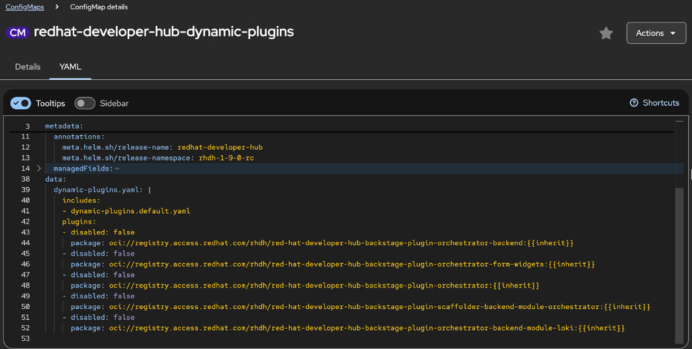
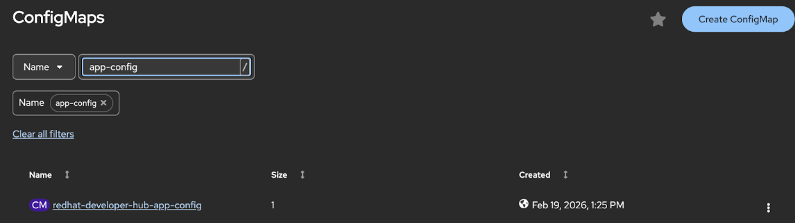
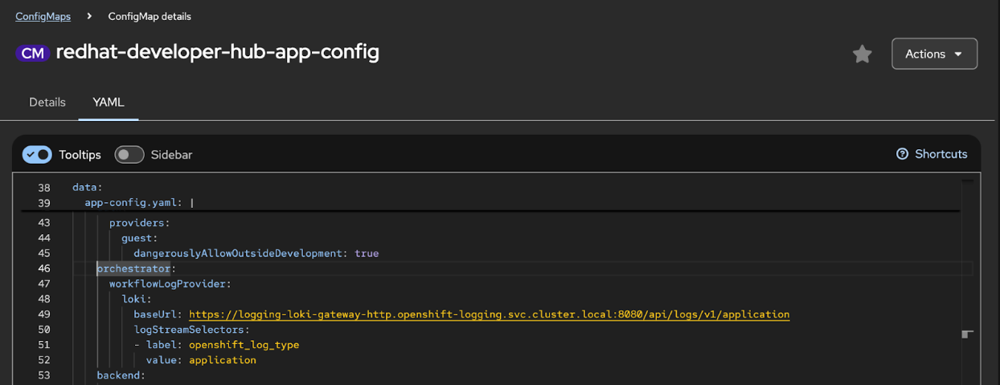

Orchestrator in Red Hat Developer Hub
Orchestrator enables serverless workflows for cloud migration, onboarding, and customization in Red Hat Developer Hub
Abstract
- 1. About Orchestrator in Red Hat Developer Hub
- 2. Enable Orchestrator plugins components
- 3. Trigger workflows from event-driven systems with CloudEvents
- 4. Display workflow data with custom review pages
- 5. Install Red Hat Developer Hub with Orchestrator by using the Red Hat Developer Hub Operator
- 5.1. Enable the Orchestrator plugins using the Operator
- 5.2. Configure Orchestrator to connect to existing PostgreSQL infrastructure
- 5.3. Upgrade the OpenShift Serverless Logic Operator for Red Hat Developer Hub 1.9
- 5.4. Upgrade the Orchestrator plugins for 1.9 Operator-backed instances
- 5.5. Resolve pod startup failure when upgrading to RHDH 1.8.6 with Orchestrator
- 5.6. Orchestrator plugin permissions
- 5.7. Manage Orchestrator plugin permissions using RBAC policies
- 6. Install Red Hat Developer Hub with Orchestrator by using the Red Hat Developer Hub Helm chart
- 6.1. Install Red Hat Developer Hub (RHDH) on OpenShift Container Platform with the Orchestrator using the Helm CLI
- 6.2. Install Red Hat Developer Hub (RHDH) using Helm from the OpenShift Container Platform web console
- 6.3. Configure Orchestrator to connect to existing PostgreSQL infrastructure using Helm
- 6.4. Resource limits for installing Red Hat Developer Hub with the Orchestrator plugin when using Helm
- 6.5. Install Orchestrator components manually on OpenShift Container Platform
- 7. Install Orchestrator plugin in an air-gapped environment with the Operator
- 8. Install Orchestrator plugin in an air-gapped environment with the Helm chart
- 9. Integrate Loki Logs to debug Orchestrator workflows
- 10. Diagnose workflow failures by using centralized logging
- 10.1. Enable JSON logging to search logs instantly without manual parsing
- 10.2. Rotate logs automatically to prevent pod crashes from full disks
- 10.3. Link logs to traces for complete failure diagnosis
- 10.4. Centralize logs for workflow troubleshooting
- 10.5. Monitor workflow health with automated alerts
- 10.6. Route alerts to existing tools to reduce response time
- 10.7. Diagnose missing observability data to restore visibility
- 10.8. OpenTelemetry configuration reference for controlling trace behavior
- 11. Optimize workflow performance by eliminating bottlenecks
- 12. Deployment manifests for Jaeger and Loki observability stack
- 13. Trace attributes reference for filtering and querying workflows
- 14. Build and deploy serverless workflows
- 15. Automate workflow deployment with Orchestrator
- 16. Diagnose and resolve serverless workflow issues
- 17. Technical appendix
Use Orchestrator to enable serverless workflows in Red Hat Developer Hub to support cloud migration, developer onboarding, and custom workflows.
1. About Orchestrator in Red Hat Developer Hub
You can streamline and automate your work by using the Orchestrator in Red Hat Developer Hub to design, run, and monitor workflows across applications and services.
- Design, run, and monitor workflows to simplify multi-step processes across applications and services.
- Standardize onboarding, migration, and integration workflows to reduce manual effort and improve consistency.
- Extend RHDH with enterprise-grade Orchestration features to support collaboration and scalability.
Orchestrator currently supports only Red Hat OpenShift Container Platform (OpenShift Container Platform); it is not available on Microsoft Azure Kubernetes Service (AKS), Amazon Elastic Kubernetes Service (EKS), or Google Kubernetes Engine (GKE).
1.1. Compatibility guide for Orchestrator
To verify that your serverless workflows run reliably, use the validated Orchestrator plugin and infrastructure versions listed in the following table.
Red Hat does not support or guarantee Orchestrator plugin functionality with unvalidated infrastructure versions. Use only the specific versions of OpenShift Serverless Logic (OSL) and other components listed in the following table.
The following table lists compatible Orchestrator and infrastructure versions:
|
Orchestrator plugin version |
Red Hat Developer Hub (RHDH) version |
OpenShift version |
OpenShift Serverless Logic (OSL) version |
OpenShift Serverless version |
|
Orchestrator |
|
|
OSL |
|
|
Orchestrator |
|
|
OSL |
|
|
Orchestrator |
|
|
OSL |
|
|
Orchestrator 1.8.2 |
1.8 |
|
OSL |
|
|
Orchestrator 1.10.0 |
1.10 |
|
OSL 1.38.0 |
1.37.1 |
The Orchestrator plugin supports the same OpenShift Container Platform versions as RHDH. See the Life Cycle page.
1.2. Understand Orchestrator architecture
The Orchestrator architecture is composed of several components, each contributing to the running and management of workflows.
- Red Hat Developer Hub (RHDH)
Serves as the primary interface. It contains the following subcomponents:
- Orchestrator frontend plugins
- Provide the interface for users to run and monitor workflows within RHDH.
- Orchestrator backend plugins
- Get workflow data into Developer Hub.
- Notifications plugins
- Inform users about workflow events.
- OpenShift Serverless Logic Operator
Serves as the workflow engine, and its subcomponents handle running, executing and providing persistence for the workflows. The Red Hat Developer Hub Operator and the Red Hat Developer Hub Helm chart manage the following lifecycle of these subcomponents:
- SonataFlow Runtime/Workflow Application
- Functions as a deployed workflow. Operates as an HTTP server, handling requests for running workflow instances. It is managed as a Kubernetes (K8s) deployment by the Openshift Serverless Logic Operator.
- Data Index Service
- Serves as a repository for workflow definitions, instances, and associated jobs. It exposes a GraphQL API used by the Orchestrator backend plugin to retrieve workflow definitions and instances.
- Job Service
- Orchestrates scheduled tasks for workflows.
- OpenShift Serverless
- Provides serverless capabilities essential for workflow communication. It employs Knative eventing to interface with the Data Index service and uses Knative functions to introduce more complex logic to workflows.
- PostgreSQL Server
- Provides a database solution essential for data persistence within the Orchestrator ecosystem. The system uses PostgreSQL Server for storing both SonataFlow information and Developer Hub data.
- OpenShift AMQ Streams (Strimzi/Kafka)
Provides enhanced reliability of the eventing system. Eventing can work without Kafka by using direct HTTP calls, however, this approach is not reliable.
Optional: The current deployment iteration does not natively integrate or include the AMQ Streams Operator. However, you can add the Operator post-install for enhanced reliability if you require it.
1.3. Getting started with Orchestrator
To start using Orchestrator in RHDH, you must install the required infrastructure components and configure your Backstage custom resource or Helm values file.
- Install the required infrastructure components, such as OpenShift Serverless Operator, and OpenShift Serverless Logic Operator
- Configure your Backstage custom resource (CR) or Helm values file for Orchestrator
When using the RHDH Operator, you must first install the required infrastructure components. The Operator then provisions the dependent SonataFlow resources once the Orchestrator plugins are enabled in the Backstage CR.
When using the RHDH Helm chart, the required infrastructure components are installed automatically using the dedicated redhat-developer-hub-orchestrator-infra Helm chart before enabling the Orchestrator plugins in the main RHDH chart.
1.4. Orchestrator plugin dependencies for Operator installation
When you enable the Orchestrator plugin in your Backstage custom resource (CR), the Operator automatically provisions required dependencies.
-
A
SonataflowPlatformCR -
NetworkPoliciesthat allow traffic between infrastructure resources (Knative, Serverless Logic Operator), monitoring traffic, and intra-namespace traffic
The Orchestrator plugin requires these components to run. For example, to communicate with the SonataFlow platform, the Orchestrator plugin uses the sonataflow-platform-data-index-service, which is created by the SonataFlowPlatform CR.
The SonataFlowPlatform CR contains Data Index service that requires PostgreSQL database as shown in the following example:
persistence:
postgresql:
secretRef:
name: backstage-psql-secret-{{backstage-name}}
userKey: POSTGRES_USER
passwordKey: POSTGRES_PASSWORD
serviceRef:
name: backstage-psql-{{backstage-name}} # # Namespace where the Backstage CR is created
namespace: {{backstage-ns}} # Namespace where the Backstage (CR) is created
databaseName: backstage_plugin_orchestratorBy default, the Orchestrator plugin dependencies use the following:
-
The PostgreSQL database named
backstage_plugin_orchestratorcreated by Backstage -
A Secret created by Backstage Operator for the PostgreSQL with
POSTGRES_USERandPOSTGRES_PASSWORDkeys as the database credentials in the Backstage CR namespace. -
A Service created by Backstage Operator for the PostgreSQL database with the name
backstage-psql-{{backstage-name}}in the Backstage CR namespace.
To enable the Backstage Operator to work with the SonataFlow platform, its ServiceAccount must have the appropriate permissions.
The Operator automatically creates the required Role and RoleBinding resource in profile/rhdh/plugin-rbac directory.
Additional resources
2. Enable Orchestrator plugins components
Enable and configure the Orchestrator plugin components in your Developer Hub instance.
2.1. Configure Orchestrator plugins
To use the Orchestrator, enable the Orchestrator plugins for Red Hat Developer Hub that are disabled by default.
- Orchestrator-frontend plugin
backstage-plugin-orchestrator- Provides the interface for users to run and monitor workflows within RHDH. You can run and track the execution status of processes.
- Orchestrator-backend plugin
backstage-plugin-orchestrator-backend- Gets workflow data into Developer Hub making sure RHDH processes critical workflow metadata and runtime status fulfilling your need for visibility.
- Orchestrator-form-widget
backstage-plugin-orchestrator-form-widgets- Provides custom widgets for the workflow execution form, allowing you to customize input fields and streamline the process of launching workflows.
- Orchestrator-scaffolder-backend-module
scaffolder-backend-module-orchestrator-
Provides callable actions from Scaffolder templates, such as
orchestrator:workflow:runororchestrator:workflow:get_params.
Prerequisites
You have installed the following operators:
- OpenShift Serverless
- OpenShift Serverless Logic (OSL)
- (Optional) For managing the Orchestrator project, you have an instance of Argo CD or Red Hat OpenShift GitOps in the cluster. It is disabled by default.
- (Optional) To use Tekton tasks and the build pipeline, you have an instance of Tekton or Red Hat OpenShift Pipelines in the cluster. These features are disabled by default.
Procedure
Locate your Developer Hub configuration and enable the Orchestrator plugins and the supporting notification plugins.
The
{{inherit}}attribute in the package field automatically resolves to the default plugin version and configuration for your version of RHDH.plugins: - package: "oci://registry.access.redhat.com/rhdh/red-hat-developer-hub-backstage-plugin-orchestrator:{{inherit}}" disabled: false - package: "oci://registry.access.redhat.com/rhdh/red-hat-developer-hub-backstage-plugin-orchestrator-backend:{{inherit}}" disabled: false - package: "oci://registry.access.redhat.com/rhdh/red-hat-developer-hub-backstage-plugin-scaffolder-backend-module-orchestrator:{{inherit}}" disabled: false - package: "oci://registry.access.redhat.com/rhdh/red-hat-developer-hub-backstage-plugin-orchestrator-form-widgets:{{inherit}}" disabled: false - package: "./dynamic-plugins/dist/backstage-plugin-notifications" disabled: false - package: "./dynamic-plugins/dist/backstage-plugin-signals" disabled: false - package: "./dynamic-plugins/dist/backstage-plugin-notifications-backend-dynamic" disabled: false - package: "./dynamic-plugins/dist/backstage-plugin-signals-backend-dynamic" disabled: falseNoteIf you need a specific plugin version, replace
{{inherit}}with the version tag, for example:oci://registry.access.redhat.com/rhdh/red-hat-developer-hub-backstage-plugin-orchestrator:1.3.0.Optional: Restrict where the Workflows tab appears.
By default, the Workflows tab appears on all entity types. To display it only on specific entities, add the
pluginConfigsection with filtering conditions.plugins: - package: "oci://registry.access.redhat.com/rhdh/red-hat-developer-hub-backstage-plugin-orchestrator:{{inherit}}" disabled: false pluginConfig: dynamicPlugins: frontend: red-hat-developer-hub.backstage-plugin-orchestrator: appIcons: - importName: OrchestratorIcon name: orchestratorIcon dynamicRoutes: - importName: OrchestratorPage menuItem: icon: orchestratorIcon text: Orchestrator textKey: menuItem.orchestrator path: /orchestrator entityTabs: - path: /workflows title: Workflows titleKey: catalog.entityPage.workflows.title mountPoint: entity.page.workflows mountPoints: - mountPoint: entity.page.workflows/cards importName: OrchestratorCatalogTab config: layout: gridColumn: 1 / -1 if: anyOf: - IsOrchestratorCatalogTabAvailableWhere:
IsOrchestratorCatalogTabAvailable- A condition function exported by the Orchestrator plugin that checks whether the entity has workflow-related data or annotations.
layout.gridColumn-
Controls the grid layout positioning. The value
1 / -1spans the full width of the grid. if.anyOfSpecifies that the tab appears if any of the listed conditions are met. Add conditions like
isKind: componentto further restrict where the tab appears.ImportantMake sure the indentation is correct:
ifmust be at the same level aslayoutunderconfig, and conditions underanyOfmust be indented two more levels. Incorrect indentation can cause the Workflows tab to appear on all entity types, including User and Group entities.To restrict the Workflows tab to only
Componententities, modify theifcondition:if: allOf: - IsOrchestratorCatalogTabAvailable - isKind: component
3. Trigger workflows from event-driven systems with CloudEvents
Connect your Apache Kafka infrastructure to Developer Hub Orchestrator to trigger workflows asynchronously from existing event-driven systems. This integration lets you maintain your messaging architecture while adding workflow orchestration capabilities.
3.1. Event-driven workflow execution for enterprise messaging integration
Event-driven workflows enable RHDH Orchestrator to respond to business events from existing messaging systems. This architecture maintains loose coupling and integrates workflows into established enterprise event streams.
3.1.1. Why CloudEvents matter for workflow integration
When you integrate workflows with message-driven systems, you need a common event format that works across different platforms and services without custom adapters for each system.
CloudEvents is a Cloud Native Computing Foundation (CNCF) specification that standardizes how to describe event data across services, platforms, and systems. This common envelope format ensures that systems can produce and consume events without custom integration code for each platform.
A CloudEvent includes required metadata fields such as the event type, source, unique identifier, and specification version. Optional fields provide additional context such as content type, data schema, subject, and timestamp. The data field contains the event payload itself, which can include structured data relevant to the event type.
For example, a CloudEvent might describe a deployment request, a compliance check trigger, or a customer order placement. Because CloudEvents standardizes the event format, multiple systems can process these events by using common libraries and tools, reducing integration complexity.
3.1.2. How your workflows respond to CloudEvents
When you configure a workflow for event-driven execution, RHDH Orchestrator processes incoming CloudEvents sourced from Apache Kafka that match specific event types. The underlying SonataFlow engine natively supports CloudEvents, which means your workflows can consume events without additional transformation or middleware.
When a CloudEvent arrives:
- The workflow engine validates the CloudEvent structure and extracts the event metadata.
- The engine matches the event type to registered workflows configured to handle that event type.
- The workflow instance starts automatically, with the CloudEvent data available as workflow input.
- The workflow runs its defined steps, which can include calling APIs, orchestrating services, or emitting additional CloudEvents.
This event-driven model differs from HTTP-triggered workflows, where you explicitly call a workflow endpoint to start the workflow.
3.1.3. Event-driven versus HTTP-triggered workflow execution
Event-driven and HTTP-triggered workflows serve different integration patterns:
- HTTP-triggered workflows
- This approach is appropriate for synchronous operations where the caller needs immediate feedback or must wait for workflow completion. The caller sends an HTTP request to a specific workflow endpoint and receives a response indicating the workflow status. This pattern works well for user-initiated actions in web applications or API integrations that require request-response semantics.
- Event-driven workflows
- Use this approach when your event producers need to continue working immediately without waiting for workflow completion. Your producers publish CloudEvents to Apache Kafka, and workflows start automatically when events arrive, without blocking the producer. This pattern supports fire-and-forget semantics, enabling the producer to continue processing without blocking on the workflow. Event-driven workflows also provide better scalability for high-volume workloads and support complex event routing and filtering capabilities that the message broker provides.
3.1.4. Benefits of event-driven workflows
Integrating workflows with CloudEvents and message brokers provides several architectural advantages:
- Loose coupling
- Event producers do not need direct knowledge of workflow endpoints or RHDH infrastructure. They publish standardized CloudEvents to a message broker, and the workflow engine consumes events independently. This separation allows services to evolve independently without tight coupling.
- Asynchronous execution
- Event producers do not block waiting for workflows to complete. This improves system responsiveness and allows workflows to handle long-running operations without impacting the producing system.
- Architectural consistency
- Organizations that have standardized on message-oriented middleware can integrate RHDH workflows into existing event-driven architectures without creating HTTP-based exceptions. This maintains architectural consistency across the enterprise.
- Enterprise messaging standards
- CloudEvents specification provides a vendor-neutral event format that major cloud providers and messaging platforms support. This ensures portability and reduces vendor lock-in.
3.1.5. CloudEvent type to Kafka topic mapping
When you configure workflows to consume CloudEvents from Kafka, you decide how CloudEvent types map to Kafka topics based on your workflow design and organizational standards.
A common pattern maps each workflow to a specific Kafka topic, where the topic name corresponds to the CloudEvent type that triggers the workflow. For example, a workflow that processes deployment requests might subscribe to a deployment.request topic, and producers would publish CloudEvents with type: deployment.request to that topic.
You can organize workflows by business capability and route events to the appropriate workflow by using Kafka topic-based routing. You can also use Kafka consumer groups to scale workflow processing across multiple RHDH instances.
3.1.6. When to use CloudEvent triggering
Choose CloudEvent-based workflow triggering when:
- Your organization has standardized on message brokers such as Apache Kafka for system-to-system communication.
- Your workflows respond to business events produced by other systems in your architecture.
- You need asynchronous, fire-and-forget workflow execution.
- You want to decouple workflow callers from RHDH infrastructure.
- Your workflows integrate into existing event-driven architectural patterns.
Use HTTP-triggered workflows when:
- Your users need immediate workflow feedback or synchronous responses.
- Your workflows serve as APIs for external systems that expect request-response patterns.
- Your organization has not deployed message broker infrastructure.
- Your workflow execution is strictly on-demand rather than event-driven.
3.2. Enable event-driven workflows by configuring Kafka connectivity
Configure Apache Kafka connectivity in the Orchestrator backend to enable workflows triggered by CloudEvents. This configuration allows workflows to respond asynchronously to business events from your messaging infrastructure.
Prerequisites
- You have enabled Orchestrator plugins.
- You have deployed Apache Kafka broker infrastructure and ensured it is accessible from RHDH.
- You have Kafka broker URLs and connection credentials.
- You have verified network connectivity between RHDH and Kafka brokers.
Procedure
Locate your Developer Hub application configuration file.
The location depends on your deployment method:
-
For Operator deployments: The configuration is in a ConfigMap, typically named
my-rhdh-app-config. -
For Helm deployments: The configuration is in the
values.yamlfile or a custom configuration file referenced in your Helm values.
-
For Operator deployments: The configuration is in a ConfigMap, typically named
Add the
orchestrator.kafkaconfiguration section to yourapp-config.yamlfile.orchestrator: kafka: clientId: my-rhdh-orchestrator brokers: - kafka-broker-1.example.com:9092 - kafka-broker-2.example.com:9092 - kafka-broker-3.example.com:9092 # logLevel override for the orchestrator kafka services. Defaults to INFO which is 4 # logLevel values based on KafkaJS values https://kafka.js.org/docs/configuration#logging # logLevel: 5 // DEBUG logLevel: 4where:
clientId- Unique identifier for the RHDH Kafka client. This identifier is displayed in Kafka broker logs and metrics.
brokers- Array of Kafka broker URLs. Include multiple brokers for high availability.
logLevel-
Optional. Kafka client logging level. Valid numeric values based on KafkaJS values are
0(NOTHING),1(ERROR),2(WARN),4(INFO), or5(DEBUG). Default is4(INFO).
Apply the configuration changes.
For Operator deployments: Update the ConfigMap and restart the RHDH instance by scaling the deployment to zero and back to the target replica count, or by deleting the pod to trigger a restart.
Replace
<my_deployment_name>with the name of your deployment:$ oc rollout restart deployment/<my_deployment_name>
For Helm deployments: Upgrade the Helm release with the updated configuration.
$ helm upgrade my-rhdh-custom-resource redhat-developer/backstage -f values.yaml -n my-rhdh-project
Verification
Check the orchestrator-backend plugin logs for Kafka connection messages.
Replace
<my_deployment_name>with the name of your deployment:$ oc logs deployment/<my_deployment_name> | grep -i kafka
Successful connection logs include messages indicating the Kafka client has connected to the broker cluster.
- Navigate to the Orchestrator plugin in the RHDH UI.
Verify that the Run as Event button is displayed next to workflows.
The button is only visible when Kafka connectivity is successfully configured.
Troubleshooting
If the Run as Event button does not appear:
- Verify that the Kafka broker URLs are correct and accessible from the RHDH pod.
- Check the orchestrator-backend logs for connection errors or authentication failures.
- Confirm that network policies allow traffic between RHDH and the Kafka brokers.
-
Verify that the
orchestrator.kafkaconfiguration section is correctly formatted in the configuration file.
3.3. Run workflows asynchronously through the UI with CloudEvents
Publish CloudEvents to Apache Kafka from the RHDH UI to trigger workflows asynchronously. This method enables fire-and-forget operation without blocking on workflow completion.
Prerequisites
- You have configured Kafka connectivity for the Orchestrator.
- You have deployed an event-type workflow that appears in the Orchestrator plugin.
Procedure
- In the RHDH UI, navigate to the Orchestrator plugin.
- In the workflows list, locate the workflow you want to trigger.
Click the Run as Event button next to the workflow.
NoteThe Run as Event button appears only when you have configured Kafka connectivity and the workflow supports event-driven execution.
If the workflow requires input data, complete the workflow input form.
The form fields correspond to the workflow’s input schema. The CloudEvent data payload includes the values you provide.
Click Submit to send the CloudEvent to Kafka.
The RHDH UI transmits a CloudEvent to the configured Kafka broker with the workflow input data. The workflow starts when the Kafka broker delivers the event to the SonataFlow engine.
Monitor the workflow status.
After submitting the CloudEvent, one of two outcomes occurs:
- Immediate start
- If the workflow starts before the UI timeout period, the UI navigates to the workflow instance detail page, where you can monitor progress.
- Delayed start
-
If the workflow has not started when the UI timeout expires, the UI displays an informational message indicating that it sent the event to Kafka as a
kafkaEvent. The UI navigates to the workflow runs list, where the workflow instance appears when the workflow starts.
If the workflow does not start immediately, locate the workflow in the workflow runs list.
The workflow instance appears in the list when the Kafka broker delivers the CloudEvent and the workflow engine starts the workflow. Depending on Kafka broker latency and workflow engine processing time, this can take several seconds.
Troubleshooting
If the workflow does not appear in the workflow runs list after several minutes:
- Verify that the Kafka broker is running and accessible.
- Check the orchestrator-backend logs for errors related to Kafka message publishing.
- Confirm that you configured the workflow to consume CloudEvents from the correct Kafka topic.
- Verify that the CloudEvent type matches the workflow’s event type configuration.
3.4. CloudEvent structure reference for workflow design and troubleshooting
CloudEvent attribute specifications and Kafka topic mapping patterns help you design workflows that consume events from external systems. Understanding this structure is essential for troubleshooting event-driven workflow integration.
3.4.1. CloudEvent specification structure
CloudEvents use a standardized JSON structure with required and optional attributes.
| Attribute | Description | Required |
|---|---|---|
|
|
CloudEvents specification version. RHDH uses version |
Yes |
|
|
Event type identifier. This typically corresponds to the Kafka topic name and the workflow event type. |
Yes |
|
|
URI identifying the context in which the event occurred. For example, the service or system that produced the event. |
Yes |
|
|
Unique identifier for the event instance. Each CloudEvent must have a unique ID. |
Yes |
|
|
Content type of the data value. Common values are |
No |
|
|
URI of the schema that the data adheres to. |
No |
|
|
Subject of the event in the context of the event producer. For example, a resource identifier or entity name. |
No |
|
|
Timestamp when the event occurred, in RFC3339 format. |
No |
|
|
Event payload containing domain-specific data. This is where workflow input parameters are included. |
No |
3.4.2. Example CloudEvent payload
An example of a CloudEvent that triggers a deployment workflow:
{
"specversion": "1.0",
"type": "deployment.request",
"source": "/api/deployments",
"id": "a234-5678-9abc-def0",
"datacontenttype": "application/json",
"time": "2025-08-15T14:30:00Z",
"data": {
"applicationName": "my-application",
"environment": "production",
"version": "2.1.0",
"approver": "jane.doe@example.com"
}
}In this example:
-
The
typefield (deployment.request) identifies the event type and typically matches the Kafka topic name. -
The
sourcefield indicates the API endpoint that produced the event. -
The
idfield provides a unique identifier for this specific deployment request. -
The
datafield contains the workflow input parameters required to run the deployment.
3.4.3. How RHDH constructs CloudEvents
When you use the Run as Event button in the RHDH UI, the Orchestrator backend plugin constructs a CloudEvent automatically:
- The plugin generates a unique event ID by using UUID format.
-
The plugin sets the
typefield based on the workflow’s event type configuration. -
The plugin sets the
sourcefield to identify RHDH as the event producer. -
The plugin sets
specversionto1.0. -
The plugin includes the workflow input form data in the
datafield. - The plugin publishes the CloudEvent to the configured Kafka broker.
3.4.4. Workflow input data structure
When you design workflows that consume CloudEvents, the workflow input schema should match the structure of the CloudEvent data field.
For example, if your workflow requires the following input:
{
"applicationName": "string",
"environment": "string",
"version": "string"
}
The CloudEvent data field must provide these properties. When you trigger the workflow from the RHDH UI, the workflow input form collects these values and includes them in the data field of the published CloudEvent.
3.4.5. CloudEvent type and Kafka topic mapping
The mapping between CloudEvent types and Kafka topics depends on your workflow configuration and Kafka topic design:
- Single topic per workflow type
-
Each workflow subscribes to a dedicated Kafka topic, where the topic name matches the CloudEvent
typefield. For example, a workflow handlingdeployment.requestevents subscribes to thedeployment.requesttopic. This pattern provides clear separation between workflow types and simplifies event routing. - Shared topic with event filtering
-
Multiple workflow types subscribe to a shared Kafka topic, and each workflow filters events based on the
typefield. This pattern reduces the number of Kafka topics but requires workflows to include event filtering logic.
The SonataFlow workflow definition specifies which event types the workflow consumes, and the Kafka topic configuration determines where the workflow engine listens for events.
4. Display workflow data with custom review pages
To meet specific approval and validation requirements, configure custom review pages in Red Hat Developer Hub Orchestrator. You can use these pages to control data layout and add business rules without modifying your existing workflow definitions.
4.1. Workflow review pages for your approval requirements
You can replace the default Orchestrator review page with a custom component to meet organizational standards, show warnings, require acknowledgment before run, or integrate with design systems in Red Hat Developer Hub.
Custom review pages are optional. If you do not implement a custom review component, the Orchestrator continues to use the default review page without any impact on functionality.
Use a custom review page when you need to perform the following actions:
- Display workflow data in a specific layout that matches your organization’s documentation or approval standards.
- Apply client-side checks or show warnings before the workflow runs.
- Include additional context, such as help text or links to documentation, for reviewers.
- Integrate with custom UI component libraries or design systems.
Custom review pages are compatible with existing workflows. The same workflow definitions, schemas, and data structures work with both default and custom review pages. You can switch between review page types without modifying your workflow configurations.
4.2. Build custom review pages for workflows
To build a custom review page that displays workflow data in a specific layout, or integrates with a design system, you must implement the getReviewComponent() method in the form API.
Prerequisites
- You have configured the Orchestrator plugins in your Developer Hub instance.
-
You have a plugin or module that implements the
OrchestratorFormApiinterface from theorchestrator-form-apipackage. - You are familiar with React component development and TypeScript.
Procedure
In your plugin that implements
OrchestratorFormApi, import the required types:import type { OrchestratorFormApi, ReviewComponentProps, } from '@red-hat-developer-hub/backstage-plugin-orchestrator-form-api';Import the helper utilities from the
orchestrator-form-reactpackage:import { generateReviewTableData, schemaHasUiHiddenFields, ReviewHiddenParametersAlert, NestedReviewTable, } from '@red-hat-developer-hub/backstage-plugin-orchestrator-form-react';These utilities handle hidden fields, password masking, and nested data structures in your custom review page.
Create your custom review page component:
import React from 'react'; import { Button, Box, Typography } from '@mui/material'; export const CustomReviewPage = (props: ReviewComponentProps) => { const { busy, schema, data, handleBack, handleExecute } = props; const [showHiddenFields, setShowHiddenFields] = React.useState(false); const reviewData = React.useMemo( () => generateReviewTableData(schema, data, { includeHiddenFields: showHiddenFields }), [schema, data, showHiddenFields] ); const hasHiddenFields = schemaHasUiHiddenFields(schema); return ( <Box> <Typography variant="h5">Review Your Workflow Data</Typography> {hasHiddenFields && ( <ReviewHiddenParametersAlert showHiddenFields={showHiddenFields} onShowHiddenFieldsChange={setShowHiddenFields} /> )} <NestedReviewTable data={reviewData} /> <Box sx={{ mt: 2, display: 'flex', gap: 1 }}> <Button onClick={handleBack} disabled={busy}> Back </Button> <Button variant="contained" onClick={handleExecute} disabled={busy} > Execute Workflow </Button> </Box> </Box> ); };Add the
getReviewComponent()method to yourOrchestratorFormApiimplementation:export class MyFormApi implements OrchestratorFormApi { getReviewComponent() { return CustomReviewPage; } // ... other OrchestratorFormApi methods }- Register your custom form API with the Orchestrator plugin according to your plugin’s extension mechanism.
Verification
- Open the Orchestrator plugin in the Developer Hub web interface.
- Select a workflow and complete the workflow form.
- Proceed to the review step.
- Confirm that your custom review page displays with the correct layout and styling.
- Click Back and confirm that the workflow form is populated.
- Click Execute Workflow and verify that the workflow runs successfully.
Next steps
To revert to the default Orchestrator review page, return undefined from the getReviewComponent() method:
export class MyFormApi implements OrchestratorFormApi {
getReviewComponent() {
return undefined; // Uses default review page
}
}4.3. Custom review page API reference
The custom review page API provides the ReviewComponentProps interface, helper utilities for data processing, and UI components to implement custom review pages for Red Hat Developer Hub Orchestrator workflows.
4.3.1. ReviewComponentProps interface
Your custom review component receives the following properties through the ReviewComponentProps interface:
| Property | Type | Description |
|---|---|---|
|
|
|
Indicates whether a workflow run is in progress. Disable action buttons when this value is |
|
|
|
Defines field structure, titles, and UI hints such as hidden fields for the workflow form. |
|
|
|
Contains the user-submitted form values structured according to the schema and awaiting review before the workflow runs. |
|
|
|
Returns to the previous step (same behavior as the default review page). This callback matches the default review page behavior. |
|
|
|
Runs the workflow with the reviewed data. Call this function when the user clicks Run to start the workflow. |
4.3.2. Helper utilities
The orchestrator-form-react package exports the following utilities to help you build custom review pages that handle data correctly:
| Function | Signature | Description |
|---|---|---|
|
|
|
Processes form data for display. Respects |
|
|
|
Returns |
4.3.3. Helper components
The orchestrator-form-react package exports the following React components for use in custom review pages:
| Component | Props | Description |
|---|---|---|
|
|
|
Renders form data in a nested table structure. Accepts data processed by |
|
|
|
Displays an alert with a toggle switch for showing or hiding fields marked as |
4.3.4. OrchestratorFormApi method
To provide a custom review page, implement the following method in your OrchestratorFormApi implementation:
| Method | Return Type | Description |
|---|---|---|
|
|
|
Returns your custom review page component, or |
5. Install Red Hat Developer Hub with Orchestrator by using the Red Hat Developer Hub Operator
You can install Red Hat Developer Hub with Orchestrator by using the Red Hat Developer Hub Operator.
5.1. Enable the Orchestrator plugins using the Operator
You can enable the Orchestrator plugins in RHDH by configuring dynamic plugins in your Backstage custom resource (CR).
Prerequisites
- You have installed RHDH on OpenShift Container Platform.
- You have access to edit or create ConfigMaps in the namespace where the Backstage CR is deployed.
Procedure
To enable the Orchestrator plugins with default settings, set
disabled: falsefor the corresponding packages.The
{{inherit}}attribute in the package field automatically resolves to the default plugin version and configuration for your version of RHDH.- package: "oci://registry.access.redhat.com/rhdh/red-hat-developer-hub-backstage-plugin-orchestrator:{{inherit}}" disabled: false - package: "oci://registry.access.redhat.com/rhdh/red-hat-developer-hub-backstage-plugin-orchestrator-backend:{{inherit}}" disabled: false dependencies: - ref: sonataflow - package: "oci://registry.access.redhat.com/rhdh/red-hat-developer-hub-backstage-plugin-scaffolder-backend-module-orchestrator:{{inherit}}" disabled: false - package: "oci://registry.access.redhat.com/rhdh/red-hat-developer-hub-backstage-plugin-orchestrator-form-widgets:{{inherit}}" disabled: falseNoteIf you need a specific plugin version, replace
{{inherit}}with the version tag, such as1.3.0. When you use the Operator, theref: sonataflowfield installs the OpenShift Serverless and OpenShift Serverless Logic resources.The following example shows a complete configuration of the Orchestrator plugin
dynamic-pluginsconfig map:apiVersion: v1 kind: ConfigMap metadata: name: orchestrator-plugin data: dynamic-plugins.yaml: | includes: - dynamic-plugins.default.yaml plugins: - package: "oci://registry.access.redhat.com/rhdh/red-hat-developer-hub-backstage-plugin-orchestrator:{{inherit}}" disabled: false - package: "oci://registry.access.redhat.com/rhdh/red-hat-developer-hub-backstage-plugin-orchestrator-backend:{{inherit}}" disabled: false dependencies: - ref: sonataflow - package: "oci://registry.access.redhat.com/rhdh/red-hat-developer-hub-backstage-plugin-scaffolder-backend-module-orchestrator:{{inherit}}" disabled: false - package: "oci://registry.access.redhat.com/rhdh/red-hat-developer-hub-backstage-plugin-orchestrator-form-widgets:{{inherit}}" disabled: false(Optional) Configure backend authentication to allow Orchestrator components to communicate with the RHDH API.
This step is required only when your workflow definitions include API calls to RHDH plugins, such as the notifications or scaffolding plugins.
apiVersion: v1 kind: ConfigMap metadata: name: app-config-rhdh data: app-config.yaml: |- backend: auth: externalAccess: - type: static options: token: ${BACKEND_SECRET} subject: orchestrator --- apiVersion: v1 kind: Secret metadata: name: backend-auth-secret stringData: # Run the following command to generate a secure random value: # node -p 'require("crypto").randomBytes(24).toString("base64")' BACKEND_SECRET: "<GENERATED_VALUE>"ImportantReplace
<GENERATED_VALUE>with a securely generated random token. Do not use example or placeholder values in production environments.If you have configured backend authentication in the previous step, update your Backstage CR to reference the secret:
apiVersion: rhdh.redhat.com/v1alpha5 kind: Backstage metadata: name: orchestrator spec: application: appConfig: configMaps: - name: app-config-rhdh dynamicPluginsConfigMapName: orchestrator-plugin extraEnvs: secrets: - name: backend-auth-secret
Verification
- In the RHDH console, confirm that the Orchestrator frontend and backend features are available.
5.2. Configure Orchestrator to connect to existing PostgreSQL infrastructure
Connect the Orchestrator plugins to your existing PostgreSQL database to leverage centralized database management and meet compliance requirements.
By default, when you enable the Orchestrator plugin by using the Operator, the dependencies: - ref: sonataflow field automatically provisions a SonataFlowPlatform custom resource (CR) and creates the required PostgreSQL database resources. The Operator uses specific naming patterns for these resources (such as backstage-psql-{{backstage-name}} for the service and backstage-psql-secret-{{backstage-name}} for the secret).
However, when you use an external PostgreSQL database that the Operator does not manage, these default resources and naming patterns do not exist. You must explicitly configure the SonataFlowPlatform CR to reference your external database resources and remove the automatic dependency provisioning.
Prerequisites
- You have installed RHDH by using the Operator.
- You have configured Developer Hub to use an external PostgreSQL database.
- You have access to create jobs, secrets, config maps, and custom resources in the namespace where you deploy the Backstage CR.
Procedure
Create the
backstage_plugin_orchestratordatabase on your external PostgreSQL server by applying the following job:apiVersion: batch/v1 kind: Job metadata: name: create-sonataflow-database-developer-hub spec: ttlSecondsAfterFinished: 30 activeDeadlineSeconds: 120 template: spec: containers: - name: psql image: quay.io/fedora/postgresql-15:latest resources: limits: cpu: "100m" memory: "128Mi" requests: cpu: "100m" memory: "64Mi" securityContext: readOnlyRootFilesystem: true allowPrivilegeEscalation: false runAsNonRoot: true capabilities: drop: - ALL envFrom: - secretRef: name: <SECRET-NAME-WITH-DB-CREDENTIALS> command: [ "sh", "-c" ] args: - | set -e # Check if the backstage_plugin_orchestrator database exists DB_EXISTS=$(PGPASSWORD=${POSTGRES_PASSWORD} psql -h ${POSTGRES_HOST} -p ${POSTGRES_PORT} -U ${POSTGRES_USER} -tAc "SELECT 1 FROM pg_database WHERE datname='backstage_plugin_orchestrator'" postgres) if [ -z "$DB_EXISTS" ]; then # Create the database if it does not exist PGPASSWORD=${POSTGRES_PASSWORD} psql -h ${POSTGRES_HOST} -p ${POSTGRES_PORT} -U ${POSTGRES_USER} -c "CREATE DATABASE backstage_plugin_orchestrator;" postgres fi restartPolicy: NeverCreate a
SonataFlowPlatformCR that references your external PostgreSQL service:apiVersion: sonataflow.org/v1alpha08 kind: SonataFlowPlatform metadata: name: sonataflow-platform spec: monitoring: enabled: true services: dataIndex: enabled: true persistence: postgresql: secretRef: name: <SECRET-NAME-WITH-DB-CREDENTIALS> userKey: POSTGRES_USER passwordKey: POSTGRES_PASSWORD serviceRef: name: <SERVICE-NAME-TO-DB> namespace: <RHDH-NAMESPACE> databaseName: backstage_plugin_orchestrator jobService: enabled: true persistence: postgresql: secretRef: name: <SECRET-NAME-WITH-DB-CREDENTIALS> userKey: POSTGRES_USER passwordKey: POSTGRES_PASSWORD serviceRef: name: <SERVICE-NAME-TO-DB> namespace: <RHDH-NAMESPACE> databaseName: backstage_plugin_orchestratorImportantUnlike the default configuration that uses the
dependencies: - ref: sonataflowfield to automatically provision database resources with specific naming patterns, this configuration explicitly references your external database Service and Secret. TheSonataFlowPlatformCR will use these resources to connect to your external database instead of creating new database resources.Configure the Orchestrator plugins in your dynamic plugins config map to remove the default
sonataflowdependency and explicitly reference the SonataFlowPlatform services:apiVersion: v1 kind: ConfigMap metadata: name: orchestrator-plugin data: dynamic-plugins.yaml: | includes: - dynamic-plugins.default.yaml plugins: # Orchestrator plugins - package: "oci://registry.access.redhat.com/rhdh/red-hat-developer-hub-backstage-plugin-orchestrator:{{inherit}}" disabled: false - package: "oci://registry.access.redhat.com/rhdh/red-hat-developer-hub-backstage-plugin-orchestrator-backend:{{inherit}}" disabled: false pluginConfig: orchestrator: dataIndexService: url: http://<SERVICE-NAME-SONATAFLOW-PLATFORM-DATA-INDEX> dependencies: [{}] # Empty array removes default 'ref: sonataflow' to prevent automatic database provisioning - package: "oci://registry.access.redhat.com/rhdh/red-hat-developer-hub-backstage-plugin-scaffolder-backend-module-orchestrator:{{inherit}}" disabled: false pluginConfig: orchestrator: dataIndexService: url: http://<SERVICE-NAME-SONATAFLOW-PLATFORM-DATA-INDEX> dependencies: [{}] # Empty array removes default 'ref: sonataflow' to prevent automatic database provisioning - package: "oci://registry.access.redhat.com/rhdh/red-hat-developer-hub-backstage-plugin-orchestrator-form-widgets:{{inherit}}" disabled: falseUpdate your Backstage CR to reference the orchestrator plugin config map and inject the database credentials secret:
apiVersion: rhdh.redhat.com/v1alpha5 kind: Backstage metadata: name: orchestrator spec: application: appConfig: configMaps: - name: app-config-rhdh dynamicPluginsConfigMapName: orchestrator-plugin extraEnvs: secrets: - name: <SECRET-NAME-WITH-DB-CREDENTIALS>
Verification
Verify that the
SonataFlowPlatformCR is running:$ oc get sonataflowplatform sonataflow-platform -o jsonpath='{.status.conditions[?(@.type=="Ready")].status}' True- In the RHDH console, confirm that the Orchestrator frontend and backend features are available and can connect to your external database.
5.3. Upgrade the OpenShift Serverless Logic Operator for Red Hat Developer Hub 1.9
Upgrade the OpenShift Serverless Logic (OSL) Operator to version 1.38.0 for compatibility with Red Hat Developer Hub 1.10.
See OpenShift Serverless Logic Operator documentation for the supported OpenShift Serverless Logic Operator versions and upgrade process.
Starting with OSL 1.37.0, the Operator subscription name and starting ClusterServiceVersion (CSV) no longer explicitly reference the operating system (OS) version.
In previous releases, the Operator subscription name and starting CSV explicitly included the OS version, such as logic-operator-rhel8 and logic-operator-rhel8.v1.36.0.
Before performing the upgrade, make sure you do not delete the existing SonataflowPlatform operands during this process. When performing the upgrade, you must replace the logic-operator-rhel8 subscription with the logic-operator subscription.
Prerequisites
- You have administrative access to the OpenShift cluster.
Procedure
Delete the previous
logic-operator-rhel8subscription and apply the following configuration to install thelogic-operatorsubscription:apiVersion: v1 kind: Namespace metadata: name: openshift-serverless-logic --- apiVersion: operators.coreos.com/v1 kind: OperatorGroup metadata: name: openshift-serverless-logic namespace: openshift-serverless-logic spec: --- apiVersion: operators.coreos.com/v1alpha1 kind: Subscription metadata: name: logic-operator namespace: openshift-serverless-logic spec: channel: stable # channel of an operator package to subscribe to installPlanApproval: Automatic # whether the update should be installed automatically name: logic-operator # name of the operator package source: redhat-operators # name of the catalog source sourceNamespace: openshift-marketplace startingCSV: logic-operator.v1.38.0 # The initial version of the operator
Optional: If your configuration uses an external PostgreSQL database with SSL, add the required datasource environment variables to the
jobServicespecification in theSonataflowPlatformcustom resource as shown in the following configuration:jobService: enabled: true persistence: dbMigrationStrategy: service postgresql: # no additional url params here. We only have currentSchema=jobs-service. jdbcUrl: 'jdbc:postgresql://postgress-external-db-primary.postgress-external-db.svc.cluster.local:5432/sonataflow?currentSchema=jobs-service' secretRef: name: postgres-cred passwordKey: POSTGRES_PASSWORD userKey: POSTGRES_USER podTemplate: container: env: # only this two env vars - name: QUARKUS_DATASOURCE_REACTIVE_POSTGRESQL_SSL_MODE value: allow - name: QUARKUS_DATASOURCE_REACTIVE_TRUST_ALL value: 'true'
5.4. Upgrade the Orchestrator plugins for 1.9 Operator-backed instances
Update the dynamic-plugins ConfigMap to use Open Container Initiative (OCI) image references for Orchestrator plugins compatibility with Red Hat Developer Hub 1.10.
If you do not update the dynamic-plugins ConfigMap after upgrading the RHDH Operator to 1.10, the Developer Hub instance fails to upgrade.
Prerequisites
-
You have a running instance of Red Hat Developer Hub with Orchestrator
1.8backed by the Operator. - You have upgraded the Red Hat Developer Hub Operator to version 1.10.
- You have administrative access to the OpenShift cluster.
Procedure
-
Open your
dynamic-pluginsConfigMap for editing. Update the
packagereferences for the Orchestrator plugins to use the 1.10 OCI registry paths as shown in the following example:apiVersion: v1 kind: ConfigMap metadata: name: dynamic-plugins-rhdh data: dynamic-plugins.yaml: | includes: - dynamic-plugins.default.yaml plugins: - package: 'oci://registry.access.redhat.com/rhdh/red-hat-developer-hub-backstage-plugin-orchestrator:{{inherit}}' disabled: false - package: 'oci://registry.access.redhat.com/rhdh/red-hat-developer-hub-backstage-plugin-orchestrator-backend:{{inherit}}' disabled: false dependencies: - ref: sonataflow - package: 'oci://registry.access.redhat.com/rhdh/red-hat-developer-hub-backstage-plugin-scaffolder-backend-module-orchestrator:{{inherit}}' disabled: false - package: 'oci://registry.access.redhat.com/rhdh/red-hat-developer-hub-backstage-plugin-orchestrator-form-widgets:{{inherit}}' disabled: falseNoteThe
{{inherit}}attribute in your configuration automatically resolves to the 1.10 version provided by the Operator.- Save the configuration changes.
Verification
- Log in to your Red Hat Developer Hub instance.
- Confirm that the Orchestrator plugins display the version metadata for 1.10.
5.5. Resolve pod startup failure when upgrading to RHDH 1.8.6 with Orchestrator
To ensure successful pod startup during a RHDH upgrade, update Orchestrator plugin versions to match the RHDH 1.8.6 configuration (version 1.8.12). This update enables the Orchestrator to automatically infer integrity hashes and prevents configuration errors.
Prerequisites
- You have an Operator-backed instance of RHDH 1.8.5 with Orchestrator 1.8.9.
You encounter the following error when upgrading to RHDH 1.8.6:
InstallException: No integrity hash provided for Package @redhat/backstage-plugin-orchestrator@1.8.9
Procedure
Edit the
dynamic-pluginsConfigMap to update the Orchestrator plugin version to1.8.12:$ oc edit configmap dynamic-plugins-rhdh -n <your_namespace>
Update the plugin versions in the ConfigMap:
apiVersion: v1 kind: ConfigMap metadata: name: dynamic-plugins-rhdh data: dynamic-plugins.yaml: | includes: - dynamic-plugins.default.yaml plugins: - package: "@redhat/backstage-plugin-orchestrator@1.8.12" disabled: false - package: "@redhat/backstage-plugin-orchestrator-backend-dynamic@1.8.12" disabled: false dependencies: - ref: sonataflow - package: "@redhat/backstage-plugin-scaffolder-backend-module-orchestrator-dynamic@1.8.12" disabled: false - package: "@redhat/backstage-plugin-orchestrator-form-widgets@1.8.12" disabled: false- Save and close the ConfigMap. The RHDH pods restart automatically.
Verification
Monitor the status of the RHDH pods to ensure they restart:
$ oc get pods -w
-
Verify that all RHDH pods are in
Runningstatus with no errors.
5.6. Orchestrator plugin permissions
The Orchestrator plugin uses the Red Hat Developer Hub permission mechanism and the Role-Based Access Control (RBAC) plugin to restrict access to backend endpoints. Orchestrator supports decoupling visibility (read) from running (update) using specific workflow IDs instead of generic permissions.
| Permission name | Resource Type | Policy | Description |
|---|---|---|---|
|
|
named resource |
read |
Lists and reads all workflow definitions. Lists and reads their instances |
|
|
named resource |
read |
Lists and reads a specific workflow definition. Lists and reads instances created for this particular workflow. |
|
|
named resource |
update |
Runs or aborts any workflow. |
|
|
named resource |
update |
Runs or aborts a specific workflow. |
|
|
named resource |
read |
Views instance variables and the workflow definition editor. |
|
|
named resource |
read |
Views all workflow instances, including those created by other users. |
Generic permissions override specific denial policies within the same action type. To maintain granular control, avoid granting generic permissions if you intend to restrict specific workflows.
-
Granting
orchestrator.workflow(read) prevents you from denying access toorchestrator.workflow.[workflowId](read). -
Granting
orchestrator.workflow.use(update) prevents you from denying access toorchestrator.workflow.use.[workflowId](update).
The [workflowId] must match the unique identifier in your workflow definition file. For example, in the workflow definition below, the identifier is greeting:
id: greeting
version: '1.0'
specVersion: '0.8'
name: Greeting workflow
description: YAML based greeting workflow
annotations:
- 'workflow-type/infrastructure'
dataInputSchema: 'schemas/greeting.sw.input-schema.json'
extensions:
- extensionid: workflow-output-schema
outputSchema: schemas/workflow-output-schema.json5.7. Manage Orchestrator plugin permissions using RBAC policies
You can configure Role-Based Access Control (RBAC) policies so that users can view workflow details without the permission to run those workflows. This configuration restricts user interaction to authorized workflows.
The Orchestrator plugin uses specific permission strings to control access to workflows and instances. After you enable the role-based access control (RBAC) plugin, you must grant the following permissions in your rbac-policy.csv file to view and manage workflows in the Orchestrator UI:
orchestrator.workflow(read)- Lists and views workflow definitions and their instances. If this permission is missing, the workflow list in the UI appears empty.
orchestrator.workflow.use(update)- Executes or aborts a workflow.
orchestrator.workflowAdminView(read)- Accesses the workflow definition editor and instance variables.
orchestrator.instanceAdminView(read)- Views all workflow instances, including those created by other users.
Prerequisites
-
You have identified the [
workflowId] for each workflow you want to restrict. - You have enabled the RBAC plugin.
-
You have configured the
policies-csv-filepath in yourapp-config.yaml.
Procedure
Identify the
workflowIdfrom your workflow definition file:id: greeting version: '1.0'
In your RBAC policy CSV file, define the permissions using the
p, role, permission, action, allowformat.NoteGeneric permissions (for example,
orchestrator.workflow) take precedence over specific permissions targeting aworkflowId, (for example,orchestrator.workflow.greeting). You cannot grant generic access and then selectively deny a specific ID.Add the following example policies to your CSV file to establish basic user and administrator roles:
# Minimal user role - can only view and run specific workflows p, role:default/workflowUser, orchestrator.workflow.greeting, read, allow p, role:default/workflowUser, orchestrator.workflow.use.greeting, update, allow # Support role - can view all workflows and instances, but not execute p, role:default/workflowSupport, orchestrator.workflow, read, allow p, role:default/workflowSupport, orchestrator.instanceAdminView, read, allow # Full admin role - complete access to all Orchestrator functions p, role:default/workflowAdmin, orchestrator.workflow, read, allow p, role:default/workflowAdmin, orchestrator.workflow.use, update, allow p, role:default/workflowAdmin, orchestrator.workflowAdminView, read, allow p, role:default/workflowAdmin, orchestrator.instanceAdminView, read, allow # Assign users to the roles g, user:default/example_user, role:default/workflowUser
In your RHDH
app-config.yamlfile, enable permissions by adding theorchestratorplugin to therbacsection and settingpolicyFileReloadtotrue.permission: enabled: true rbac: policies-csv-file: <absolute_path_to_the_policy_file> pluginsWithPermission: - orchestrator policyFileReload: true admin: users: - name: user:default/YOUR_USER- Restart the application to apply the changes.
Verification
-
Log in as a user assigned to the
workflowUserrole. - Navigate to the Orchestrator plugin and verify that the workflow appears in the list.
You can view dynamic permissions containing a workflowId in the RBAC UI, but you cannot modify them in the interface. You must use the policy CSV file or the RBAC API to manage these specific workflow permissions.
Additional resources
6. Install Red Hat Developer Hub with Orchestrator by using the Red Hat Developer Hub Helm chart
You can install Red Hat Developer Hub with Orchestrator by using the Red Hat Developer Hub Helm chart.
6.1. Install Red Hat Developer Hub (RHDH) on OpenShift Container Platform with the Orchestrator using the Helm CLI
You can install Red Hat Developer Hub (RHDH) on OpenShift Container Platform with the Orchestrator by using the Helm CLI. The installation automatically enables the required dynamic plugins and integrates workflow infrastructure.
Prerequisites
- You are logged in as an administrator and have access to the Red Hat Developer Hub Helm chart repository.
You can install the necessary infrastructures resources, such as other OpenShift operators (OpenShift Serverless and OpenShift Serverless Logic), alongside RHDH in the same namespace.
This is a one-off requirement and must be completed before enabling the Orchestrator plugin.
Procedure
Manually approve the install plans for the Operators. You must run the
oc patch installplancommands provided in the output to approve their installation.ImportantBy default, Orchestrator Infrastructure for Red Hat Developer Hub Helm chart does not auto-approve the required Serverless Operators. You must manually approve the install plans.
As an administrator, install relevant cluster-wide resources.
$ helm repo add openshift-helm-charts https://charts.openshift.io/ $ helm install
<release_name>openshift-helm-charts/redhat-developer-hub-orchestrator-infraImportantYou must be an administrator to install the
redhat-developer-hub-orchestrator-infraHelm chart because it deploys additional cluster-scoped OpenShift Serverless and OpenShift Serverless Logic Operators. As an administrator, you must manually approve the install plans for OpenShift Serverless and Serverless Logic Operators.Install the Backstage chart with the orchestrator enabled as shown in the following example:
$ helm install <release_name> openshift-helm-charts/redhat-developer-hub --version 1.10.1 \ --set orchestrator.enabled=true
(Optional) Enable Notifications and Signals plugins by adding them to the
global.dynamic.pluginslist in yourvalues.yamlfile as shown in the following example:global: dynamic: plugins: - disabled: false package: "./dynamic-plugins/dist/backstage-plugin-notifications" - disabled: false package: "./dynamic-plugins/dist/backstage-plugin-signals" - disabled: false package: "./dynamic-plugins/dist/backstage-plugin-notifications-backend-dynamic" - disabled: false package: "./dynamic-plugins/dist/backstage-plugin-signals-backend-dynamic"(Optional) You can disable the Serverless Logic and Serverless Operators individually or together by setting their values to
false, as shown in the following example:$ helm install <release_name> openshift-helm-charts/redhat-developer-hub \ --version 1.10.1 \ --set orchestrator.enabled=true \ --set orchestrator.serverlessOperator=false \ --set orchestrator.serverlessLogicOperator=false
(Optional) To configure Orchestrator to use an external PostgreSQL database, follow the detailed instructions in Configure Orchestrator to connect to existing PostgreSQL infrastructure using Helm.
NoteConfiguring an external database for Orchestrator requires additional steps beyond standard RHDH external database configuration. You must create the
backstage_plugin_orchestratordatabase, configure theorchestrator.sonataflowPlatformvalues, and ensure proper service connectivity. See the detailed procedure for complete instructions.
Verification
- Verify that the Orchestrator plugin is visible in the Red Hat Developer Hub UI.
- Create and run sample workflows to confirm the orchestration is functioning correctly.
6.2. Install Red Hat Developer Hub (RHDH) using Helm from the OpenShift Container Platform web console
You can install Red Hat Developer Hub (RHDH) with the Orchestrator by using the (OpenShift Container Platform) web console. This method is useful if you prefer a graphical interface or want to deploy cluster-wide resources without using the Helm CLI.
Prerequisites
- You are logged in to the OpenShift Container Platform web console as an administrator.
- You have access to the Red Hat Developer Hub Helm chart repository.
- Your cluster has internet access or the Helm charts are mirrored in a disconnected environment.
Procedure
- In the OpenShift Container Platform web console, go to the Helm Charts and verify that the Red Hat Developer Hub Helm chart repository is available.
Search for the Orchestrator infrastructure for Red Hat Developer Hub and select Install.
ImportantYou must be an administrator to install the Orchestrator Infrastructure for Red Hat Developer Hub Helm chart because it deploys cluster-scoped resources. As an administrator, you must manually approve the install plans for OpenShift Serverless and Serverless Logic Operators.
As a regular user, search for the Red Hat Developer Hub chart and install it by setting the value of
orchestrator.enabledtotrue. Otherwise, the Orchestrator will not be deployed.- Wait until they are successfully deployed.
- Monitor the deployment status by navigating to Pods or releases.
Verification
After deployment completes:
- The orchestrator-related pods are running in the selected namespace.
- Cluster-wide resources are present.
- You can start connecting the orchestrator to your Red Hat Developer Hub UI.
6.3. Configure Orchestrator to connect to existing PostgreSQL infrastructure using Helm
Connect the Orchestrator plugins to your existing PostgreSQL database when deploying with the Helm chart to leverage centralized database management and meet compliance requirements.
By default, when you enable the Orchestrator plugin by using the Helm chart with orchestrator.enabled=true, the chart automatically provisions a SonataFlowPlatform custom resource (CR) and creates the required PostgreSQL database resources. The chart uses the orchestrator.sonataflowPlatform values to configure these resources.
However, when you use an external PostgreSQL database that the Helm chart does not manage, you must explicitly configure the orchestrator.sonataflowPlatform values to reference your external database resources.
Prerequisites
- You have installed RHDH by using the Helm chart.
- You have configured Developer Hub to use an external PostgreSQL database.
- You have access to create jobs, secrets, services, and custom resources in the namespace where you deploy RHDH.
Procedure
Create the
backstage_plugin_orchestratordatabase on your external PostgreSQL server by applying the following job:apiVersion: batch/v1 kind: Job metadata: name: create-sonataflow-database-developer-hub spec: ttlSecondsAfterFinished: 30 activeDeadlineSeconds: 120 template: spec: containers: - name: psql image: quay.io/fedora/postgresql-15:latest resources: limits: cpu: "100m" memory: "128Mi" requests: cpu: "100m" memory: "64Mi" securityContext: readOnlyRootFilesystem: true allowPrivilegeEscalation: false runAsNonRoot: true capabilities: drop: - ALL envFrom: - secretRef: name: <SECRET-NAME-WITH-DB-CREDENTIALS> command: [ "sh", "-c" ] args: - | set -e # Check if the backstage_plugin_orchestrator database exists DB_EXISTS=$(PGPASSWORD=${POSTGRES_PASSWORD} psql -h ${POSTGRES_HOST} -p ${POSTGRES_PORT} -U ${POSTGRES_USER} -tAc "SELECT 1 FROM pg_database WHERE datname='backstage_plugin_orchestrator'" postgres) if [ -z "$DB_EXISTS" ]; then # Create the database if it does not exist PGPASSWORD=${POSTGRES_PASSWORD} psql -h ${POSTGRES_HOST} -p ${POSTGRES_PORT} -U ${POSTGRES_USER} -c "CREATE DATABASE backstage_plugin_orchestrator;" postgres fi restartPolicy: NeverConfigure your external PostgreSQL database for Orchestrator in your Helm configuration file
values.yaml:orchestrator: enabled: true sonataflowPlatform: externalDBsecretRef: <SECRET-NAME-WITH-DB-CREDENTIALS> externalDBName: backstage_plugin_orchestrator externalDBHost: <SERVICE-NAME-TO-DB> externalDBPort: "5432"Where:
orchestrator.enabled-
Set to
trueto enable the Orchestrator plugin. orchestrator.sonataflowPlatform.externalDBsecretRef-
The secret name containing database credentials with
POSTGRES_USER,POSTGRES_PASSWORD,POSTGRES_HOST, andPOSTGRES_PORTkeys. orchestrator.sonataflowPlatform.externalDBName-
The database name for Orchestrator data (must be
backstage_plugin_orchestrator). orchestrator.sonataflowPlatform.externalDBHost- The Kubernetes Service name pointing to your external database.
orchestrator.sonataflowPlatform.externalDBPortThe PostgreSQL port (typically
5432).ImportantUnlike the default configuration where the Helm chart automatically provisions database resources, this configuration explicitly references your external database Service and Secret. The
SonataFlowPlatformCR will use these resources to connect to your external database instead of creating new database resources.
Apply the configuration changes in your Helm configuration file
values.yaml:$ helm upgrade -n <your_namespace> <your_deploy_name> openshift-helm-charts/redhat-developer-hub -f values.yaml --version 1.10.1
Verification
Verify that the
SonataFlowPlatformCR is running:$ oc get sonataflowplatform sonataflow-platform -o jsonpath='{.status.conditions[?(@.type=="Ready")].status}' True- In the RHDH console, confirm that the Orchestrator frontend and backend features are available and can connect to your external database.
6.4. Resource limits for installing Red Hat Developer Hub with the Orchestrator plugin when using Helm
When installing Red Hat Developer Hub (RHDH) with the Orchestrator plugin using Helm, the chart defines default CPU and memory limits for the SonataFlowPlatform component.
These limits are enforced by the cluster so that pods do not exceed their allocated resources.
- Default resource limits
| Resource | Default value |
|---|---|
|
CPU limits |
|
|
Memory limits |
|
You can override these values in any of the following ways:
-
With
values.yaml -
With
--setflags
-
With
Override defaults with
values.yamlas shown in the following example:orchestrator: enabled: true sonataflowPlatform: resources: limits: cpu: "500m" memory: "1Gi"Override with
--setas shown in the following example:$ helm upgrade --install <release_name> openshift-helm-charts/redhat-developer-hub \ --set orchestrator.enabled=true \ --set orchestrator.sonataflowPlatform.resources.requests.cpu=500m \ --set orchestrator.sonataflowPlatform.resources.requests.memory=128Mi \ --set orchestrator.sonataflowPlatform.resources.limits.cpu=1 \ --set orchestrator.sonataflowPlatform.resources.limits.memory=2Gi
NoteThe
--setsetting is applicable only whenorchestrator.enabledistrue. By default, it is set tofalse.
6.5. Install Orchestrator components manually on OpenShift Container Platform
Use manual installation when you want full control of the setup process and component versions. Manual installation method focuses on setting up the underlying infrastructure.
Procedure
- Install the OpenShift Serverless components manually by following the instructions in the Red Hat OpenShift Serverless documentation.
(Optional) If required, deploy a custom PostgreSQL database.
ImportantPrevent workflow context from being lost when the Pod restarts by configuring workflow persistence. You can configure persistence at the namespace level by using the
SonataFlowPlatformorSonataFlowcustom resources (CR). For more information, check the Managing workflow persistence documentation.
7. Install Orchestrator plugin in an air-gapped environment with the Operator
You can configure Red Hat Developer Hub (RHDH) with the Orchestrator plugin in a fully disconnected or partially disconnected environment by using the Operator.
7.1. Install Red Hat Developer Hub with Orchestrator in a fully disconnected OpenShift Container Platform environment using the Operator
You can install Red Hat Developer Hub with Orchestrator plugin in a fully air-gapped environment using the Operator.
A disconnected installation prevents unauthorized access, data transfer, or communication with external sources.
You can use the helper script to install Red Hat Developer Hub by mirroring the Operator-related images to disk and transferring them to your disconnected environment without any connection to the internet.
Prerequisites
- You have mirrored the Red Hat Developer Hub Operator images to the local registry using the RHDH mirroring script. For more information, see Installing Red Hat Developer Hub in a fully disconnected environment with the Operator.
- You have set up your disconnected environment using a local registry.
- You have permissions to push OCI images to your internal container registry.
-
You have installed the
oc mirrortool, with a version corresponding to the version of your OpenShift Container Platform cluster.
Procedure
Create an
ImageSetConfigurationfile foroc mirror. You must include the images and operators required by the Serverless Logic Operator in theImageSetConfigurationfile, as shown in the following example:apiVersion: mirror.openshift.io/v2alpha1 kind: ImageSetConfiguration mirror: additionalimages: - name: registry.access.redhat.com/rhdh/red-hat-developer-hub-backstage-plugin-orchestrator@<digest> - name: registry.access.redhat.com/rhdh/red-hat-developer-hub-backstage-plugin-orchestrator-backend@<digest> - name: registry.access.redhat.com/rhdh/red-hat-developer-hub-backstage-plugin-scaffolder-backend-module-orchestrator@<digest> - name: registry.access.redhat.com/rhdh/red-hat-developer-hub-backstage-plugin-orchestrator-form-widgets@<digest> operators: - catalog: registry.redhat.io/redhat/redhat-operator-index:v<ocp-version> # For example: registry.redhat.io/redhat/redhat-operator-index:v4.21 packages: - name: logic-operator channels: - name: stable minVersion: 1.38.0 maxVersion: 1.38.0 - name: serverless-operator channels: - name: stable minVersion: 1.37.1 maxVersion: 1.37.1
where:
<digest>Locate the image digests for your version of RHDH in the
dynamic-plugins.default.yamlfile. You can extract this file from the plugin catalog index image to verify the default settings for your specific release:#!/bin/bash unpack () { local IMAGE="$1" DIR="${IMAGE//:/}" DIR="/tmp/${DIR//\//-}" rm -fr "$DIR"; mkdir -p "$DIR"; container_id=$(podman create "${IMAGE}") podman export $container_id -o /tmp/image.tar && tar xf /tmp/image.tar -C "${DIR}/"; podman rm $container_id; rm -f /tmp/image.tar echo "Unpacked $IMAGE into $DIR" cd $DIR; tree -d -L 3 -I "usr|root|buildinfo" } unpack "registry.access.redhat.com/rhdh/plugin-catalog-index:{product-version)" # you can then find thedynamic-plugins.default.yamlunder /tmp/registry.access.redhat.com/rhdh/plugin-catalog-index{product-version)/dynamic-plugins.default.yaml
Mirror the images in the
ImageSetConfiguration.yamlfile by running theoc mirrorcommand. For example:$ oc mirror --config=ImageSetConfiguration.yaml file:///path/to/mirror-archive --authfile /path/to/authfile --v2
Note-
The
--v2flag is required for OpenShift Container Platform 4.21 and later. -
The
oc mirrorcommand generates a local workspace containing the mirror archive files and the required cluster manifests.
-
The
-
Transfer the directory specified by
/path/to/mirror-archiveto a bastion host within your disconnected environment. From the bastion host which has access to the mirror registry, mirror the images from the disk directory to your target registry. For example:
$ oc mirror --v2 --from <mirror-archive-file> docker://<target-registry-url:port> --workspace file://<workspace folder> --authfile /path/to/authfile
where:
<mirror-archive-file>-
Enter the name of the transferred
tarfile. <target-registry-url:port>-
Enter your local registry, for example,
registry.localhost:5000.
Apply the cluster-wide resources generated during the push step to redirect all image pulls to your local registry, as shown in the following example:
$ cd <workspace folder>/working-dir/cluster-resources/ $ oc apply -f .
-
Install the OpenShift Serverless Operator and OpenShift Serverless Logic Operators using
OperatorHub. - Create a Backstage custom resource (CR).
Configure the Backstage CR for the Orchestrator as described in the Orchestrator plugin dependencies for Operator installation.
Create all the resources and configure the Backstage instance accordingly.
Verification
- Restart the RHDH pod and wait for the components to deploy properly.
- Once stable, go to the RHDH UI, and confirm that the Orchestrator UI is accessible and functioning correctly.
The successful accessibility of the Orchestrator UI confirms that the underlying components are running and the cluster recognizes the plugin.
7.2. Install Red Hat Developer Hub with Orchestrator in a partially disconnected OpenShift Container Platform environment using the Operator
You can install Red Hat Developer Hub with Orchestrator plugin in a partial air-gapped environment using the Operator.
A disconnected installation prevents unauthorized access, data transfer, or communication with external sources.
You can use the oc mirror command to mirror resources directly to your accessible local mirror registry and apply the generated cluster resources.
Prerequisites
- You have mirrored the Red Hat Developer Hub Operator images to the local registry using the RHDH mirroring script. For more information, see Installing Red Hat Developer Hub in a partially disconnected environment with the Operator.
- You have set up your disconnected environment using a local registry.
- You have permissions to push OCI images to your internal container registry.
-
You have installed the
oc mirrortool, with a version corresponding to the version of your OpenShift Container Platform cluster.
Procedure
Create an
ImageSetConfigurationfile foroc mirror. You must include the images and operators required by the Serverless Logic Operator in theImageSetConfigurationfile, as shown in the following example:apiVersion: mirror.openshift.io/v2alpha1 kind: ImageSetConfiguration mirror: additionalimages: - name: registry.access.redhat.com/rhdh/red-hat-developer-hub-backstage-plugin-orchestrator@<digest> - name: registry.access.redhat.com/rhdh/red-hat-developer-hub-backstage-plugin-orchestrator-backend@<digest> - name: registry.access.redhat.com/rhdh/red-hat-developer-hub-backstage-plugin-scaffolder-backend-module-orchestrator@<digest> - name: registry.access.redhat.com/rhdh/red-hat-developer-hub-backstage-plugin-orchestrator-form-widgets@<digest> operators: - catalog: registry.redhat.io/redhat/redhat-operator-index:v<ocp-version> # For example: registry.redhat.io/redhat/redhat-operator-index:v4.21 packages: - name: logic-operator channels: - name: stable minVersion: 1.38.0 maxVersion: 1.38.0 - name: serverless-operator channels: - name: stable minVersion: 1.37.1 maxVersion: 1.37.1
Where:
<digest>Locate the image digests for your version of RHDH in the
dynamic-plugins.default.yamlfile. You can extract this file from the plugin catalog index image to verify the default settings for your specific release:#!/bin/bash unpack () { local IMAGE="$1" DIR="${IMAGE//:/}" DIR="/tmp/${DIR//\//-}" rm -fr "$DIR"; mkdir -p "$DIR"; container_id=$(podman create "${IMAGE}") podman export $container_id -o /tmp/image.tar && tar xf /tmp/image.tar -C "${DIR}/"; podman rm $container_id; rm -f /tmp/image.tar echo "Unpacked $IMAGE into $DIR" cd $DIR; tree -d -L 3 -I "usr|root|buildinfo" } unpack "registry.access.redhat.com/rhdh/plugin-catalog-index:{product-version)" # you can then find thedynamic-plugins.default.yamlunder /tmp/registry.access.redhat.com/rhdh/plugin-catalog-index{product-version)/dynamic-plugins.default.yaml
Mirror the images in the
ImageSetConfiguration.yamlfile by running theoc mirrorcommand. For example:$ oc mirror --config=imagesetconfiguration.yaml docker://<registry URL:port> --workspace file://<workspace folder> --authfile /path/to/authfile --v2 $ cd <workspace folder>/working-dir/cluster-resources/ $ oc apply -f .
NoteThe
--v2flag is required for OpenShift Container Platform 4.21 and later.-
Install the OpenShift Serverless Operator and OpenShift Serverless Logic Operators using
OperatorHub. - Create a Backstage custom resource (CR).
Configure the Backstage CR for the Orchestrator as described in the Orchestrator plugin dependencies for Operator installation.
Create all the resources and configure the Backstage instance accordingly.
Verification
- Restart the RHDH pod and wait for the components to deploy properly.
- Once stable, go to the RHDH UI, and confirm that the Orchestrator UI is accessible and functioning correctly.
The successful accessibility of the Orchestrator UI confirms that the underlying components are running and the cluster recognizes the plugin.
8. Install Orchestrator plugin in an air-gapped environment with the Helm chart
You can configure Red Hat Developer Hub (RHDH) with the Orchestrator plugin in a fully disconnected or partially disconnected environment by using the Helm chart.
8.1. Install Red Hat Developer Hub with Orchestrator in a fully disconnected OpenShift Container Platform environment using the Helm chart
You can install Red Hat Developer Hub (RHDH) with the Orchestrator plugin in a fully air-gapped OpenShift Container Platform environment using the Helm chart.
You can mirror images to an intermediary disk, and then mirror from the disk to your target local registry and apply the generated cluster resources.
Prerequisites
- You have set up your disconnected environment using a local registry.
- You have permissions to push OCI images to your internal container registry.
-
You have installed the
oc mirrortool, with a version corresponding to the version of your OpenShift Container Platform cluster.
Procedure
Create an
ImageSetConfiguration.yamlfile foroc mirror. You must use anImageSetConfigurationfile to include all mirrored images required, as shown in the following example:apiVersion: mirror.openshift.io/v2alpha1 kind: ImageSetConfiguration mirror: additionalimages: - name: registry.access.redhat.com/rhdh/red-hat-developer-hub-backstage-plugin-orchestrator@<digest> - name: registry.access.redhat.com/rhdh/red-hat-developer-hub-backstage-plugin-orchestrator-backend@<digest> - name: registry.access.redhat.com/rhdh/red-hat-developer-hub-backstage-plugin-scaffolder-backend-module-orchestrator@<digest> - name: registry.access.redhat.com/rhdh/red-hat-developer-hub-backstage-plugin-orchestrator-form-widgets@<digest> helm: repositories: - name: openshift-charts url: https://charts.openshift.io charts: - name: redhat-developer-hub version: "1.10.1" - name: redhat-developer-hub-orchestrator-infra version: "1.10.1" operators: - catalog: registry.redhat.io/redhat/redhat-operator-index:v<ocp-version> # For example: registry.redhat.io/redhat/redhat-operator-index:v4.21 packages: - name: logic-operator channels: - name: stable minVersion: 1.38.0 maxVersion: 1.38.0 - name: serverless-operator channels: - name: stable minVersion: 1.37.1 maxVersion: 1.37.1
where:
<digest>Locate the image digests for your version of RHDH in the
dynamic-plugins.default.yamlfile. You can extract this file from the plugin catalog index image to verify the default settings for your specific release:#!/bin/bash unpack () { local IMAGE="$1" DIR="${IMAGE//:/_}" DIR="/tmp/${DIR//\//-}" rm -fr "$DIR"; mkdir -p "$DIR"; container_id=$(podman create "${IMAGE}") podman export $container_id -o /tmp/image.tar && tar xf /tmp/image.tar -C "${DIR}/"; podman rm $container_id; rm -f /tmp/image.tar echo "Unpacked $IMAGE into $DIR" cd $DIR; tree -d -L 3 -I "usr|root|buildinfo" } unpack "registry.access.redhat.com/rhdh/plugin-catalog-index:1.10" # you can then find thedynamic-plugins.default.yamlunder /tmp/registry.access.redhat.com/rhdh/plugin-catalog-index_1.10/dynamic-plugins.default.yaml
Mirror the images in the
ImageSetConfiguration.yamlfile by running theoc mirrorcommand. For example:$ oc mirror --config=ImageSetConfiguration.yaml file:///path/to/mirror-archive --authfile /path/to/authfile --v2
Note-
The
--v2flag is required for OpenShift Container Platform 4.21 and later. -
The
oc mirrorcommand pulls the charts listed in theImageSetConfigurationfile and makes them available astgzarchives under the/path/to/mirror-archivedirectory.
-
The
Apply the cluster-wide resources generated during the push step to redirect all image pulls to your local registry, as shown in the following example:
$ cd <workspace folder>/working-dir/cluster-resources/ $ oc apply -f .
-
Transfer the generated mirror archive file, for example,
/path/to/mirror-archive/mirror_000001.tar, to a bastion host within your disconnected environment. From the bastion host in your disconnected environment, which has access to the mirror registry, mirror the images from the archive file to your target registry. For example:
$ oc mirror --v2 --from <mirror-archive-file> docker://<target-registry-url:port> --workspace file://<workspace folder> --authfile /path/to/authfile
where:
<mirror-archive-file>-
Enter the name of the transferred
tarfile. <target-registry-url:port>-
Enter your local registry, for example,
registry.localhost:5000.
-
Apply the
redhat-developer-hub-orchestrator-infraHelm chart and approve the install plans. See Air-gapped installation with Helm chart instructions for details. Apply the RHDH 1.10 Helm chart. Include the version 1.10.1 and enable the Orchestrator plugin, as shown in the following example:
orchestrator.enabled=true
The RHDH 1.10 Helm chart defaults to pulling Orchestrator plugins from the official Red Hat OCI registry using full URL references. Override this default behavior to point the chart to your local registry.
To configure the Orchestrator plugins to use a custom registry, complete the following steps:
-
Open your
values.yamlfile. List the Orchestrator plugin packages under the
orchestrator.pluginssection. You must replace the simplified package references with the full URLs that point to your custom OCI registry.ImportantYou must explicitly include the
pluginConfigconfiguration for each plugin as shown in the following example:orchestrator: plugins: - package: oci://<custom_registry_url>/rhdh/red-hat-developer-hub-backstage-plugin-orchestrator@_<digest>_ disabled: true pluginConfig: orchestrator: dataIndexService: url: http://sonataflow-platform-data-index-service - package: oci://<custom_registry_url>/rhdh/red-hat-developer-hub-backstage-plugin-orchestrator-form-widgets@_<digest>_ disabled: true pluginConfig: dynamicPlugins: frontend: red-hat-developer-hub.backstage-plugin-orchestrator-form-widgets: {} - package: oci://<custom_registry_url>/rhdh/red-hat-developer-hub-backstage-plugin-orchestrator@_<digest>_ disabled: true pluginConfig: dynamicPlugins: frontend: red-hat-developer-hub.backstage-plugin-orchestrator: appIcons: - importName: OrchestratorIcon name: orchestratorIcon dynamicRoutes: - importName: OrchestratorPage menuItem: icon: orchestratorIcon text: Orchestrator textKey: menuItem.orchestrator path: /orchestrator entityTabs: - path: /workflows title: Workflows titleKey: catalog.entityPage.workflows.title mountPoint: entity.page.workflows mountPoints: - mountPoint: entity.page.workflows/cards importName: OrchestratorCatalogTab config: layout: gridColumn: 1 / -1 if: anyOf: - IsOrchestratorCatalogTabAvailable - package: oci://<custom_registry_url>/rhdh/red-hat-developer-hub-backstage-plugin-scaffolder-backend-module-orchestrator@_<digest>_ disabled: true pluginConfig: orchestrator: dataIndexService: url: http://sonataflow-platform-data-index-servicewhere:
<custom_registry_url>- Enter the address of your custom registry where the OCI images have been mirrored.
<digest>Locate the image digests for your version of RHDH in the
dynamic-plugins.default.yamlfile. You can extract this file from the plugin catalog index image to verify the default settings for your specific release:#!/bin/bash unpack () { local IMAGE="$1" DIR="${IMAGE//:/}" DIR="/tmp/${DIR//\//-}" rm -fr "$DIR"; mkdir -p "$DIR"; container_id=$(podman create "${IMAGE}") podman export $container_id -o /tmp/image.tar && tar xf /tmp/image.tar -C "${DIR}/"; podman rm $container_id; rm -f /tmp/image.tar echo "Unpacked $IMAGE into $DIR" cd $DIR; tree -d -L 3 -I "usr|root|buildinfo" } unpack "registry.access.redhat.com/rhdh/plugin-catalog-index:{product-version)" # you can then find the dynamic-plugins.default.yaml under /tmp/registry.access.redhat.com/rhdh/plugin-catalog-index{product-version)/dynamic-plugins.default.yaml
Verification
- Restart the RHDH Pod and wait for the components to deploy properly.
- After deployment is complete, go to the RHDH UI and confirm that the Orchestrator UI is accessible and functioning correctly.
The successful accessibility of the Orchestrator UI confirms that the underlying components are running and the cluster recognizes the plugin.
8.2. Install Red Hat Developer Hub with Orchestrator in a partially disconnected OpenShift Container Platform environment using the Helm chart
You can install Red Hat Developer Hub (RHDH) with the Orchestrator plugin in a partial OpenShift Container Platform environment using the Helm chart.
A disconnected installation prevents unauthorized access, data transfer, or communication with external sources.
You can use the oc mirror command to mirror resources directly to your accessible local registry and apply the generated cluster resources.
Prerequisites
- You have set up your disconnected environment using a local registry.
- You have permissions to push OCI images to your internal container registry.
-
You have installed the
oc mirrortool, with a version corresponding to the version of your OpenShift Container Platform cluster.
Procedure
Create an
ImageSetConfiguration.yamlfile foroc mirror. You must use anImageSetConfigurationfile to include all mirrored images required, as shown in the following example:apiVersion: mirror.openshift.io/v2alpha1 kind: ImageSetConfiguration mirror: additionalimages: - name: registry.access.redhat.com/rhdh/red-hat-developer-hub-backstage-plugin-orchestrator@<digest> - name: registry.access.redhat.com/rhdh/red-hat-developer-hub-backstage-plugin-orchestrator-backend@<digest> - name: registry.access.redhat.com/rhdh/red-hat-developer-hub-backstage-plugin-scaffolder-backend-module-orchestrator@<digest> - name: registry.access.redhat.com/rhdh/red-hat-developer-hub-backstage-plugin-orchestrator-form-widgets@<digest> helm: repositories: - name: openshift-charts url: https://charts.openshift.io charts: - name: redhat-developer-hub version: "1.10.1" - name: redhat-developer-hub-orchestrator-infra version: "1.10.1" operators: - catalog: registry.redhat.io/redhat/redhat-operator-index:v<ocp-version> # For example: registry.redhat.io/redhat/redhat-operator-index:v4.21 packages: - name: logic-operator channels: - name: stable minVersion: 1.38.0 maxVersion: 1.38.0 - name: serverless-operator channels: - name: stable minVersion: 1.37.1 maxVersion: 1.37.1
Mirror the images in the
ImageSetConfiguration.yamlfile by running theoc mirrorcommand to pull images and charts, and push the images directly to the target registry. For example:$ oc mirror --config=imagesetconfiguration.yaml docker://<registry URL:port> --workspace file://<workspace folder> --authfile /path/to/authfile --v2
Note-
The
--v2flag is required for OpenShift Container Platform 4.21 and later. -
The
oc mirrorcommand pulls the charts listed in theImageSetConfigurationfile and makes them available astgzarchives under the<workspace folder>directory.
-
The
Apply the generated cluster resources to the disconnected cluster. For example:
$ cd <workspace folder>/working-dir/cluster-resources/ $ oc apply -f .
-
Apply the
redhat-developer-hub-orchestrator-infraHelm chart and approve the install plans. See Air-gapped installation with Helm chart instructions for details. Apply the RHDH 1.10 Helm chart. Include the version 1.10.1 and enable the Orchestrator plugin, as shown in the following example:
orchestrator.enabled=true
The RHDH 1.10 Helm chart defaults to pulling Orchestrator plugins from the official Red Hat OCI registry using full URL references. You must override this behavior to point to your local registry.
To configure the Orchestrator plugins to use a custom registry, complete the following steps:
-
Open your
values.yamlfile. Explicitly list the Orchestrator plugin packages under the
orchestrator.pluginssection.You must replace the simplified package references with the full URLs that point to your custom OCI registry. You must explicitly include the
pluginConfigconfiguration for each plugin as shown in the following example:orchestrator: plugins: - package: oci://<custom_registry_url>/rhdh/red-hat-developer-hub-backstage-plugin-orchestrator@_<digest>_ disabled: true pluginConfig: orchestrator: dataIndexService: url: http://sonataflow-platform-data-index-service - package: oci://<custom_registry_url>/rhdh/red-hat-developer-hub-backstage-plugin-orchestrator-form-widgets@_<digest>_ disabled: true pluginConfig: dynamicPlugins: frontend: red-hat-developer-hub.backstage-plugin-orchestrator-form-widgets: {} - package: oci://<custom_registry_url>/rhdh/red-hat-developer-hub-backstage-plugin-orchestrator@_<digest>_ disabled: true pluginConfig: dynamicPlugins: frontend: red-hat-developer-hub.backstage-plugin-orchestrator: appIcons: - importName: OrchestratorIcon name: orchestratorIcon dynamicRoutes: - importName: OrchestratorPage menuItem: icon: orchestratorIcon text: Orchestrator textKey: menuItem.orchestrator path: /orchestrator entityTabs: - path: /workflows title: Workflows titleKey: catalog.entityPage.workflows.title mountPoint: entity.page.workflows mountPoints: - mountPoint: entity.page.workflows/cards importName: OrchestratorCatalogTab config: layout: gridColumn: 1 / -1 if: anyOf: - IsOrchestratorCatalogTabAvailable - - package: oci://<custom_registry_url>/rhdh/red-hat-developer-hub-backstage-plugin-scaffolder-backend-module-orchestrator@_<digest>_ disabled: true pluginConfig: orchestrator: dataIndexService: url: http://sonataflow-platform-data-index-serviceWhere:
<custom_registry_url>- Enter the address of your custom registry where the OCI images have been mirrored.
<digest>Locate the image digests for your version of RHDH in the
dynamic-plugins.default.yamlfile. You can extract this file from the plugin catalog index image to verify the default settings for your specific release:#!/bin/bash unpack () { local IMAGE="$1" DIR="${IMAGE//:/}" DIR="/tmp/${DIR//\//-}" rm -fr "$DIR"; mkdir -p "$DIR"; container_id=$(podman create "${IMAGE}") podman export $container_id -o /tmp/image.tar && tar xf /tmp/image.tar -C "${DIR}/"; podman rm $container_id; rm -f /tmp/image.tar echo "Unpacked $IMAGE into $DIR" cd $DIR; tree -d -L 3 -I "usr|root|buildinfo" } unpack "registry.access.redhat.com/rhdh/plugin-catalog-index:{product-version)" # you can then find thedynamic-plugins.default.yamlunder /tmp/registry.access.redhat.com/rhdh/plugin-catalog-index{product-version)/dynamic-plugins.default.yaml
-
Open your
Verification
- Restart the RHDH pod and wait for the components to deploy properly.
- After deployment is complete, go to the RHDH UI and confirm that the Orchestrator UI is accessible and functioning correctly.
The successful accessibility of the Orchestrator UI confirms that the underlying components are running and the cluster recognizes the plugin.
9. Integrate Loki Logs to debug Orchestrator workflows
You can configure the Orchestrator backend to integrate external services and support serverless workflows. For detailed workflow debugging, integrate a log provider.
9.1. Integrate Loki logs for Orchestrator workflows
To troubleshoot and debug errors, integrate Loki logs into the Red Hat Developer Hub interface. You must install the Loki backend module and configure the connection details.
Prerequisites
- You have enabled the Orchestrator plugins in your Red Hat Developer Hub instance.
- You have a running Loki instance.
- You have stored your Orchestrator logs in the Loki instance.
Procedure
Enable the Loki backend module in the
redhat-developer-hub-dynamic-pluginsConfigMap.- Open the ConfigMap and select the YAML view.
Add the Loki backend module to the
pluginssection:- disabled: false package: oci://registry.access.redhat.com/rhdh/red-hat-developer-hub-backstage-plugin-orchestrator-backend-module-loki:{{inherit}}
- Save the file.
In your application
app-config.yamlConfigMap file, add the Loki workflow log provider integration to the orchestrator section:

NoteThe base URl might vary depending on where you store and access the Loki logs.
To obtain the base URL, run the following command:
LOKI_HOST=$(oc get route logging-loki -n openshift-logging -o jsonpath='{.spec.host}') echo "https://$LOKI_HOST/api/logs/v1/application/"orchestrator: workflowLogProvider: loki: baseUrl: <LOKI_BASE_URL> token: <AUTH_TOKEN> rejectUnauthorized: false # logPipelineFilters: # - '| filter1' # - '|= filter2' # logStreamSelectors: # - label: 'app' # value: '=~".+"'where:
baseUrl: Specifies the base URL of your Loki instance. This value is required.token: The access token for authentication. This value is required. To find your current token, run theoc whoami -tcommand.rejectUnauthorized: Set tofalseif using self-signed certificates.- Optional Parameters
logPipelineFilters: Multiple Log Pipeline Filters can be specified in thelogPipelineFilterssection. See the Loki documentation to learn more about the log pipeline filters and their values and usage.logStreamSelectors: Specifies log stream selectors to filter the logs. By default, the plugin retrieves logs with theopenshift_log_type="application". For more information about selector syntax, see the Grafana Loki documentation.
- Save the ConfigMap.
- Restart the Red Hat Developer Hub pod to apply the changes.
Verification
- Navigate to the Orchestrator plugin in the RHDH interface.
- Select a workflow instance.
- Click View Logs to display the workflow instance logs.
10. Diagnose workflow failures by using centralized logging
Search all workflow logs from a single dashboard in Red Hat Developer Hub to diagnose failures quickly. Use structured logging to connect process instances with traces and set up automated alerts for workflow failures.
10.1. Enable JSON logging to search logs instantly without manual parsing
Output logs as JSON instead of plain text so log platforms can automatically filter by process instance, error level, or trace ID. Structured logging eliminates manual parsing and enables instant searches across millions of log entries.
SonataFlow workflows support structured JSON logging with automatic process instance correlation through:
-
Process instance context: Automatic
processInstanceIdcorrelation in all log entries - Structured format: JSON logs optimized for machine processing and aggregation
- Multi-tenancy support: Log isolation by workflow and process instance
Prerequisites
- You have deployed SonataFlow workflow by using the SonataFlow Operator on OpenShift or Kubernetes.
-
You have included the
io.quarkus:quarkus-logging-jsonextension in your workflowQUARKUS_EXTENSIONSenvironment variable. -
You have
cluster-adminpermissions for deploying log aggregation stack.
Procedure
Update your workflow build configuration to include the JSON logging extension:
export QUARKUS_EXTENSIONS="${QUARKUS_EXTENSIONS},io.quarkus:quarkus-logging-json"-
Open the
{workflow-name}-propsConfigMap for your workflow. Add the following properties to the
application.propertiessection:# Enable JSON logging with Quarkus JSON logging extension quarkus.log.console.json=true quarkus.log.console.json.pretty-print=false # Include all MDC context fields in JSON output # - processInstanceId: Set automatically by SonataFlow/Kogito # - traceId, spanId: Set by Quarkus OpenTelemetry (requires quarkus.otel.enabled=true) quarkus.log.console.json.print-details=true # Set log levels for workflow components quarkus.log.category."org.kie.kogito".level=DEBUG quarkus.log.category."io.serverlessworkflow".level=INFO # Optional: Enable additional context logging quarkus.log.category."org.kie.kogito.services.context".level=DEBUG
Save the ConfigMap and restart the workflow pod.
The following is an example of a workflow ConfigMap with an enabled JSON logging:
apiVersion: v1 kind: ConfigMap metadata: name: greetings-props namespace: sonataflow-infra data: application.properties: | # JSON logging configuration quarkus.log.console.json=true quarkus.log.console.json.pretty-print=false quarkus.log.console.json.print-details=true # Log levels quarkus.log.category."org.kie.kogito".level=DEBUG quarkus.log.category."io.serverlessworkflow".level=INFO
Verification
Check the pod logs to verify the JSON format and the presence of the
processInstanceId:oc logs <workflow_pod_name> | grep processInstanceId
{"timestamp":"...","level":"INFO","message":"...","mdc":{"processInstanceId":"abc-123-..."}}
If the Mapped Diagnostic Context (MDC) fields are empty, verify the following:
- The workflow has processed at least one instance.
- The SonataFlow version matches the required configuration for MDC propagation.
10.2. Rotate logs automatically to prevent pod crashes from full disks
Automatically archive old logs before the disk fills up and crashes your workflow pods. Log rotation keeps recent logs available for debugging while preventing storage from becoming a production incident.
When using file-based logging in Kubernetes, mount the log directory to a volume to prevent data loss or pod instability.
Prerequisites
-
You have configured a shared Kubernetes volume in the
SonataFlowcustom resource. - Your workflow image includes the JSON logging extension.
Procedure
Add the following properties to the workflow ConfigMap to enable file-based JSON output:
quarkus.log.file.enable=true quarkus.log.file.path=/var/log/sonataflow/workflow.log quarkus.log.file.json=true
Configure log rotation settings to manage disk usage:
quarkus.log.file.rotation.max-file-size=10M quarkus.log.file.rotation.max-backup-index=5 quarkus.log.file.rotation.rotate-on-boot=true
This configuration does the following:
- Rotates logs when they reach 10MB
- Keeps up to 5 backup files
- Adds date suffix to rotated files
- Rotates on application startup
Set log level for file output:
quarkus.log.file.level=INFO
Update the
SonataFlowcustom resource (CR) to mount the volume at the log path:spec: podTemplate: container: volumeMounts: - name: shared-logs mountPath: /var/log/sonataflow volumes: - name: shared-logs emptyDir: sizeLimit: 500MiAfter applying the configuration, restart your workflow pod and check the log output:
# Get workflow pod name oc get pods -n sonataflow-infra -l sonataflow.org/workflow-app=your-workflow # Check logs for JSON format oc logs -n sonataflow-infra your-workflow-pod-name | head -5
Verification
Access the workflow container and verify the log file exists and is receiving JSON data:
oc exec <pod_name> -- ls -l /var/log/sonataflow/workflow.log
Verify that the file contains JSON data:
oc exec <pod_name> -- head -n 5 /var/log/sonataflow/workflow.log
10.3. Link logs to traces for complete failure diagnosis
Click a trace ID in any log entry to see the complete timeline of what happened across all services. Log-to-trace correlation turns a single error message into a full execution diagram showing every step and service call.
Prerequisites
- You have deployed an OpenTelemetry-compliant collector (for example, Jaeger) in the cluster.
-
You have set
quarkus.log.console.json.print-details=truetotrue.
Procedure
Add the OpenTelemetry exporter and service identification properties to your workflow ConfigMap:
# Enable OpenTelemetry integration quarkus.otel.enabled=true quarkus.otel.exporter.otlp.traces.endpoint=http://jaeger-collector:4317 quarkus.otel.service.name=${workflow.name}Set the resource attributes to filter traces in your observability dashboard:
quarkus.otel.resource.attributes=service.namespace=sonataflow-infra
- Restart the workflow pod to apply the new configuration.
Verification
- Trigger a workflow execution.
Check the logs for trace identifiers:
oc logs <pod_name> | grep traceId
-
Make sure the
mdcblock in the JSON output containstraceIdandspanIdfields with non-empty values.
10.4. Centralize logs for workflow troubleshooting
Query logs from all workflow pods in your Red Hat Developer Hub cluster using a single Grafana dashboard. Centralized logging allows you to search by process ID, error type, or time range from a browser.
Prerequisites
- You have running Loki and Grafana instances in the cluster.
- You have configured workflow for file-based JSON logging.
-
You have
cluster-adminpermissions.
Procedure
Deploy the PLG stack by using Helm:
# Add Grafana Helm repository helm repo add grafana https://grafana.github.io/helm-charts helm repo update # Create namespace oc new-project sonataflow-observability # Deploy Loki stack helm install loki-stack grafana/loki-stack \ --namespace sonataflow-observability \ --set loki.persistence.enabled=true \ --set loki.persistence.size=20Gi \ --set promtail.config.logLevel=info \ --set grafana.enabled=true
NoteFor production deployments, use a custom
values.yamlfile with appropriate resource limits and security contexts.Create a ConfigMap for the Promtail sidecar by selecting the configuration that matches your logging method:
Scrape container stdout
Use this configuration to collect logs from container
stdoutby using Kubernetes service discovery:apiVersion: v1 kind: ConfigMap metadata: name: promtail-config namespace: sonataflow-observability data: config.yml: | server: http_listen_port: 3101 clients: - url: http://loki:3100/loki/api/v1/push scrape_configs: - job_name: sonataflow-workflows kubernetes_sd_configs: - role: pod namespaces: names: ["sonataflow-infra"] relabel_configs: - source_labels: [__meta_kubernetes_pod_label_sonataflow_org_workflow_app] action: keep regex: (.+) - source_labels: [__meta_kubernetes_pod_name] target_label: pod - source_labels: [__meta_kubernetes_pod_label_sonataflow_org_workflow_app] target_label: workflow pipeline_stages: - json: expressions: timestamp: timestamp level: level logger: logger message: message processInstanceId: mdc.processInstanceId traceId: mdc.traceId spanId: mdc.spanId - labels: level: logger: processInstanceId: traceId:Scrape JSON log files
If you use
[file-based JSON logging](#file-based-json-logging), configure Promtail to read from the shared log volume:apiVersion: v1 kind: ConfigMap metadata: name: promtail-sidecar-config namespace: sonataflow-infra data: config.yml: | server: http_listen_port: 3101 clients: - url: http://loki.sonataflow-observability.svc.cluster.local:3100/loki/api/v1/push positions: filename: /var/log/positions.yaml scrape_configs: - job_name: sonataflow-json-files static_configs: - targets: - localhost labels: job: sonataflow-workflows __path__: /var/log/sonataflow/*.log pipeline_stages: - json: expressions: timestamp: timestamp level: level logger: loggerName message: message processInstanceId: mdc.processInstanceId traceId: mdc.traceId spanId: mdc.spanId - labels: level: logger: processInstanceId: traceId: - timestamp: source: timestamp format: RFC3339Nano
Add the Promtail sidecar container to your
SonataFlowcustom resource:apiVersion: sonataflow.org/v1alpha08 kind: SonataFlow metadata: name: my-workflow namespace: sonataflow-infra spec: podTemplate: container: volumeMounts: - name: shared-logs mountPath: /var/log/sonataflow containers: - name: promtail-sidecar image: grafana/promtail:2.9.0 args: - -config.file=/etc/promtail/config.yml volumeMounts: - name: shared-logs mountPath: /var/log/sonataflow readOnly: true - name: promtail-config mountPath: /etc/promtail - name: positions mountPath: /var/log resources: requests: cpu: 50m memory: 64Mi limits: cpu: 100m memory: 128Mi volumes: - name: shared-logs emptyDir: sizeLimit: 500Mi - name: promtail-config configMap: name: promtail-sidecar-config - name: positions emptyDir: {}Querying logs in Grafana: After deploying the stack, use the following LogQL queries in the Grafana Explore view:
Filter logs by process instance
{job="sonataflow-workflows"} | json | processInstanceId="abc-123-def-456"Find workflow errors:
{job="sonataflow-workflows", workflow="onboarding"} | json | level="ERROR"Trace correlation:
{job="sonataflow-workflows"} | json | traceId="4bf92f3577b34da6a3ce929d0e0e4736"Process instance timeline:
{job="sonataflow-workflows"} | json | processInstanceId="abc-123-def-456" | line_format "{{.timestamp}} [{{.level}}] {{.message}}"
Verification
- Access the Grafana Explore view.
Run the following LogQL query, replacing
<instance_id>with a valid ID:{job="sonataflow-workflows"} | json | processInstanceId="<instance_id>"Confirm that Grafana displays the log entries associated with the specified process instance.
10.5. Monitor workflow health with automated alerts
Set up automated alerts to notify your team when workflows fail at high rates, process instances become stuck, or runtimes exceed thresholds. Proactive alerting reduces mean time to detection for production issues.
Prerequisites
- You have enabled a structured JSON logging to provide metadata for LogQL and PromQL queries.
- You have installed a monitoring stack, such as Prometheus or Loki with Alertmanager in the cluster.
Procedure
Create a configuration file containing the following alert rule groups based on your monitoring requirements:
To monitor failure rates:
- alert: WorkflowHighErrorRate expr: rate({job="sonataflow-workflows", level="ERROR"}[5m]) > 0.1 for: 2m labels: severity: warning annotations: summary: "High error rate in SonataFlow workflows"To identify stalled process instances:
- alert: WorkflowInstanceStuck expr: | time() - max by (process_instance_id) ( {job="sonataflow-workflows"} | json | unwrap timestamp[1h] ) > 3600 labels: severity: criticalTo identify long-running workflows:
- alert: LongRunningWorkflow expr: | time() - min by (process_instance_id) ( {job="sonataflow-workflows"} | json | message="Workflow started" | unwrap timestamp[24h] ) > 7200 labels: severity: warning annotations: summary: "Workflow {{ $labels.process_instance_id }} running longer than 2 hours"
- Apply the alert rules to your cluster.
Verification
- Access the monitoring dashboard, such as the Prometheus or OpenShift Console.
- Verify that the alerts appear in the list under the Alerts tab.
10.6. Route alerts to existing tools to reduce response time
Receive failure notifications where your team already monitors incidents instead of checking a separate dashboard. Routing alerts to existing channels ensures on-call engineers see critical workflow issues immediately.
Prerequisites
- You have a valid webhook URL for the notification service (for example, Slack webhook).
Procedure
Define a receiver and a routing path in your Alertmanager configuration:
route: group_by: ['alertname', 'workflow'] group_wait: 10s group_interval: 10s repeat_interval: 1h receiver: 'web.hook' receivers: - name: 'web.hook' slack_configs: - api_url: 'YOUR_SLACK_WEBHOOK_URL' channel: '#workflow-alerts' title: 'SonataFlow Alert' text: '{{ range .Alerts }}{{ .Annotations.summary }}{{ end }}'- Reload the Alertmanager configuration to apply the changes.
Verification
- Trigger a test alert in your workflow environment.
-
Monitor the external notification service (for example, the Slack channel
#workflow-alerts). A notification appears in the external service containing the summary and details of the triggered alert.
10.7. Diagnose missing observability data to restore visibility
To restore monitoring visibility in Red Hat Developer Hub, you must identify why logs or traces are missing. Use these diagnostic steps to resolve issues with plain text logs, empty process instance IDs, or missing traces in Jaeger.
Prerequisites
-
You have access to the OpenShift (
oc) CLI. -
You have administrator permissions for the
sonataflow-infraandsonataflow-observabilitynamespaces. -
You have access to the workflow project
pom.xmland ConfigMap files.
Procedure
Verify JSON log formatting.
If logs appear as plain text instead of structured JSON, verify the following:
-
The
io.quarkus:quarkus-logging-jsonextension is defined in thepom.xmlfile. -
The
quarkus.log.console.json=trueproperty is set in the{workflow-name}-propsConfigMap. - The workflow image was rebuilt and redeployed after adding the extension.
- The workflow pod was restarted after applying ConfigMap changes.
Diagnose missing process instance context.
If logs are in JSON format but the
processInstanceIdfield is missing or empty, verify the following:- Workflow instances are actively running.
The following property is set in the workflow ConfigMap:
quarkus.log.console.json.print-details=true
- The SonataFlow version in use supports automatic Mapped Diagnostic Context (MDC) population.
Resolve log collection failures in Loki.
If logs are generated but do not appear in Loki or the aggregation dashboard, verify the following:
- The Promtail or Fluent Bit label selector matches the workflow pod labels.
- The collector has the required Role-Based Access Control (RBAC) permissions to read logs from the workflow namespace.
-
The
scrape_configsin the collector configuration include the correct namespace. Check the collector logs for permission errors:
oc logs -l app=promtail -n sonataflow-observability
Mitigate high resource usage.
If JSON logging causes performance degradation or high storage costs, implement the following changes:
Increase the log level for verbose categories to reduce output volume:
quarkus.log.category."org.kie.kogito".level=WARN
Enable asynchronous logging to reduce the impact on workflow execution time:
quarkus.log.console.async=true
- Configure log rotation and retention policies in the aggregation backend.
Verification
- After applying a fix, trigger a workflow execution.
Inspect the latest log entries. The logs appear in JSON format and include valid
processInstanceId,traceId, andspanIdfields:oc logs <workflow_pod_name> --tail=10
10.8. OpenTelemetry configuration reference for controlling trace behavior
Configuration properties that control where traces are sent, how often they are sampled, and which service name appears in your monitoring dashboard. Reference this table to tune telemetry behavior for your environment.
| Property | Description | Default |
|---|---|---|
|
|
Enables or disables OpenTelemetry support. |
|
|
|
Specify the service name that appears in the trace backend. |
|
|
|
The URL of the OTLP-compatible collector. | |
|
|
The transport protocol. Supported values are |
|
|
|
The sampling strategy. For example, |
|
11. Optimize workflow performance by eliminating bottlenecks
To maintain high performance in Red Hat Developer Hub, you must identify and resolve execution delays. Use distributed tracing to visualize the execution path and workflows and determine where time is spent across service boundaries.
11.1. Collect traces to monitor workflow performance
To monitor workflows in Red Hat Developer Hub, you must enable distributed tracing. Distributed tracing shows the executed path of workflow steps and identifies where failures occur.
To enable observability features such as tracing and metrics in the SonataFlow runtime, you must add the OpenTelemetry addon and configure the workflow properties. The sonataflow-addons-quarkus-opentelemetry addon provides a standard configuration with minimal setup required.
The OpenTelemetry integration for SonataFlow includes the following capabilities:
- Distributed tracing: Track workflow execution across services and steps.
- Metrics collection: Monitor performance, duration, and success rates.
- Log aggregation: Centralize logs with trace correlation.
- Context propagation: Maintain trace context across workflow boundaries and asynchronous operations.
Prerequisites
- You have installed and configured the SonataFlow Operator.
-
You have
cluster-adminor equivalent permissions to deploy observability infrastructure and modify ConfigMaps. - A Kubernetes or OpenShift cluster is available.
Procedure
Add the OpenTelemetry addon to the
QUARKUS_EXTENSIONSenvironment variable during the image build process:export QUARKUS_EXTENSIONS="${QUARKUS_EXTENSIONS},org.apache.kie.sonataflow:sonataflow-addons-quarkus-opentelemetry"-
Open the
{workflow-name}-propsConfigMap for your workflow. In the
application.propertiessection, enable the OpenTelemetry integration and configure the service attributes:# Application Identity quarkus.application.name=my-workflow quarkus.application.version=1.0.0 # OpenTelemetry Configuration quarkus.otel.enabled=true quarkus.otel.traces.enabled=true quarkus.otel.metrics.enabled=true quarkus.otel.logs.enabled=true # Service Resource Attributes quarkus.otel.resource.attributes=\ service.name=my-workflow,\ service.namespace=workflows,\ service.version=1.0.0,\ deployment.environment=production # SonataFlow Specific Configuration # Master switch for SonataFlow OpenTelemetry integration sonataflow.otel.enabled=true # Service identification (uses Quarkus application name/version as defaults) sonataflow.otel.service-name=${quarkus.application.name:kogito-workflow-service} sonataflow.otel.service-version=${quarkus.application.version:unknown} # Enable span creation for workflow states sonataflow.otel.spans.enabled=true # Enable process lifecycle events (start, complete, error, state transitions) sonataflow.otel.events.enabled=true- Save the ConfigMap and restart the workflow pod to apply the changes.
Verification
Verify that the OpenTelemetry addon is loaded by checking the pod logs:
oc logs -n workflows deployment/onboarding-workflow | grep "sonataflow-addons-quarkus-opentelemetry"
Verify the trace report status:
oc logs -n workflows deployment/greeting | grep -i "export\|batch"
Confirm that the observability backend, such as
Jaeger, is receiving data:oc logs -n observability deployment/jaeger | grep -i "span\|trace"
11.2. Connect traces to existing monitoring to avoid tool sprawl
Route workflow traces to the observability tools your team already uses instead of learning a new system. Exporter configuration sends telemetry data to Jaeger, Grafana, or any OTLP-compatible platform.
Prerequisites
- You have enabled OpenTelemetry in your workflow.
- An observability platform (Jaeger or OpenTelemetry Collector) is available in your cluster.
Procedure
Configure an export strategy based on your environment requirements:
Configure the OTLP exporter with batch processing (Recommended)
For production environments, use an OTLP exporter with batch processing to reduce network overhead and improve performance:
# OTLP exporter - Direct to Jaeger quarkus.otel.exporter.otlp.endpoint=http://jaeger-collector.observability.svc.cluster.local:4317 quarkus.otel.exporter.otlp.protocol=grpc quarkus.otel.traces.exporter=cdi # Batch processing for production quarkus.otel.bsp.schedule.delay=5s quarkus.otel.bsp.max.export.batch.size=512 quarkus.otel.bsp.export.timeout=2s quarkus.otel.bsp.max.queue.size=2048
Configure direct export to an external platform
For development or simple integrations, use a direct export configuration:
# Example: Direct export to Jaeger quarkus.otel.exporter.otlp.endpoint=http://jaeger-collector:4317 quarkus.otel.exporter.otlp.protocol=grpc quarkus.otel.traces.exporter=cdi
Externalize the configuration for production deployments by using environment variables. This ensures that your deployment remains secure and flexible across environments.
# Externalized Configuration quarkus.otel.exporter.otlp.endpoint=${OTEL_EXPORTER_OTLP_ENDPOINT:http://localhost:4317} quarkus.otel.exporter.otlp.headers=${OTEL_EXPORTER_OTLP_HEADERS:} quarkus.application.name=${OTEL_SERVICE_NAME:my-workflow} quarkus.otel.resource.attributes=${OTEL_RESOURCE_ATTRIBUTES:deployment.environment=dev}
11.3. Troubleshooting reference for trace connectivity and authentication issues
Symptom-to-solution reference table for missing traces, authentication failures, and broken context propagation. Use this troubleshooting guide when traces fail to appear in Jaeger, authentication errors occur, or telemetry delivery stops working.
| Symptom | Potential cause | Resolution |
|---|---|---|
|
Traces do not appear in the dashboard. |
OpenTelemetry is disabled or the endpoint is unreachable. |
Verify the |
|
Authentication errors ( |
Missing or invalid authorization headers. |
Configure the |
|
High memory usage in the collector. |
Large telemetry batches or high traffic volume. |
Implement a |
|
Context is lost between workflow steps. |
Incorrect propagator configuration. |
Ensure |
11.3.1. Diagnose missing traces
Verify that OpenTelemetry is enabled in the workflow ConfigMap:
oc get cm {workflow-name}-props -n workflows -o yamlCheck the pod logs for initialization errors:
oc logs deployment/{deployment-name} -n workflows | grep -i "otel"Test the connection to the Jaeger collector from within the workflow pod:
oc exec deployment/{deployment-name} -- curl -v http://jaeger-collector:4317
Configure authentication headers. If your observability platform requires authentication, add the following property to your
application.propertiesfile:quarkus.otel.exporter.otlp.headers=authorization=Bearer ${API_TOKEN}- Resolve context propagation issues. To ensure trace IDs are maintained across service boundaries, configure the following propagators and enable JSON logging to verify the IDs in the output:
# Include required propagators quarkus.otel.propagators=tracecontext,baggage,jaeger # Enable JSON logging to verify trace IDs quarkus.log.console.json=true
12. Deployment manifests for Jaeger and Loki observability stack
Deploy a complete observability stack for SonataFlow workflows with ready-to-use Jaeger and Loki manifests. These pre-configured examples help you monitor workflow performance and logs immediately without manual setup.
12.1. Jaeger distributed tracing deployment manifests
Deploy Jaeger to visualize distributed traces from SonataFlow workflows. Use these manifests to set up trace collection with pre-configured OTLP endpoints and resource limits for development or production environments.
Jaeger provides distributed tracing visualization for SonataFlow workflows.
apiVersion: v1
kind: Namespace
metadata:
name: jaeger-system
---
apiVersion: apps/v1
kind: Deployment
metadata:
name: jaeger
namespace: jaeger-system
labels:
app: jaeger
spec:
replicas: 1
selector:
matchLabels:
app: jaeger
template:
metadata:
labels:
app: jaeger
spec:
containers:
- name: jaeger
image: jaegertracing/all-in-one:1.59
env:
- name: COLLECTOR_OTLP_ENABLED
value: "true"
ports:
- containerPort: 16686
name: query
- containerPort: 4317
name: otlp-grpc
- containerPort: 4318
name: otlp-http
resources:
requests:
memory: "256Mi"
cpu: "100m"
limits:
memory: "512Mi"
cpu: "500m"
readinessProbe:
httpGet:
path: /
port: 14269
initialDelaySeconds: 5
livenessProbe:
httpGet:
path: /
port: 14269
initialDelaySeconds: 10
---
apiVersion: v1
kind: Service
metadata:
name: jaeger-collector
namespace: jaeger-system
labels:
app: jaeger
spec:
selector:
app: jaeger
ports:
- name: otlp-grpc
port: 4317
targetPort: 4317
- name: otlp-http
port: 4318
targetPort: 4318
type: ClusterIP
---
apiVersion: v1
kind: Service
metadata:
name: jaeger-query
namespace: jaeger-system
labels:
app: jaeger
spec:
selector:
app: jaeger
ports:
- name: query-http
port: 16686
targetPort: 16686
type: ClusterIPapiVersion: route.openshift.io/v1
kind: Route
metadata:
name: jaeger-query
namespace: jaeger-system
spec:
to:
kind: Service
name: jaeger-query
port:
targetPort: query-http
tls:
termination: edge
insecureEdgeTerminationPolicy: Redirect
Add these properties to the application.properties file of your workflow:
# Direct connection to Jaeger quarkus.otel.exporter.otlp.endpoint=http://jaeger-collector.jaeger-system.svc.cluster.local:4317 quarkus.otel.exporter.otlp.protocol=grpc quarkus.otel.traces.exporter=cdi # Additional Jaeger-specific propagation quarkus.otel.propagators=tracecontext,baggage,jaeger
For production environments, use the Jaeger Operator with Elasticsearch storage:
apiVersion: jaegertracing.io/v1
kind: Jaeger
metadata:
name: jaeger-production
namespace: observability
spec:
strategy: production
storage:
type: elasticsearch
elasticsearch:
nodeCount: 3
storage:
storageClassName: gp3
size: 50Gi
resources:
requests:
cpu: 500m
memory: 4Gi
limits:
cpu: 1000m
memory: 8Gi
collector:
replicas: 2
resources:
requests:
cpu: 200m
memory: 256Mi
limits:
cpu: 500m
memory: 512Mi12.2. Loki log aggregation deployment manifests
Deploy Loki to aggregate logs from SonataFlow workflows using OpenTelemetry Protocol. These manifests include pre-configured OTLP settings, structured metadata support, and resource limits for immediate log collection.
Loki supports OpenTelemetry Protocol (OTLP) for direct log ingestion from SonataFlow workflows.
apiVersion: v1
kind: ConfigMap
metadata:
name: loki-config
namespace: observability
data:
loki-config.yaml: |
auth_enabled: false
server:
http_listen_port: 3100
grpc_listen_port: 9096
common:
path_prefix: /loki
storage:
filesystem:
chunks_directory: /loki/chunks
rules_directory: /loki/rules
replication_factor: 1
ring:
instance_addr: 127.0.0.1
kvstore:
store: inmemory
distributor:
otlp_config:
# Default resource attributes as index labels
default_resource_attributes_as_index_labels:
- service.name
- service.namespace
- deployment.environment
- k8s.namespace.name
- k8s.cluster.name
limits_config:
# Enable structured metadata (default in Loki 3.0+)
allow_structured_metadata: true
# Maximum number of index labels per stream
max_label_names_per_series: 15
schema_config:
configs:
- from: 2024-01-01
store: tsdb
object_store: filesystem
schema: v13 # Required for OTLP support
index:
prefix: index_
period: 24hapiVersion: apps/v1
kind: Deployment
metadata:
name: loki
namespace: observability
labels:
app: loki
spec:
replicas: 1
selector:
matchLabels:
app: loki
template:
metadata:
labels:
app: loki
spec:
securityContext:
fsGroup: 10001
runAsUser: 10001
runAsNonRoot: true
containers:
- name: loki
image: grafana/loki:3.0.0
args:
- -config.file=/etc/loki/loki-config.yaml
ports:
- containerPort: 3100
name: http-metrics
- containerPort: 9096
name: grpc
resources:
requests:
cpu: 500m
memory: 1Gi
limits:
cpu: 1000m
memory: 2Gi
volumeMounts:
- name: config
mountPath: /etc/loki
- name: storage
mountPath: /loki
livenessProbe:
httpGet:
path: /ready
port: 3100
initialDelaySeconds: 45
readinessProbe:
httpGet:
path: /ready
port: 3100
initialDelaySeconds: 45
volumes:
- name: config
configMap:
name: loki-config
- name: storage
emptyDir: {}
---
apiVersion: v1
kind: Service
metadata:
name: loki
namespace: observability
labels:
app: loki
spec:
selector:
app: loki
ports:
- name: http-metrics
port: 3100
targetPort: 3100
- name: grpc
port: 9096
targetPort: 9096
type: ClusterIPTo route logs to Loki and traces to Jaeger, use the following configuration:
# OpenTelemetry Configuration
quarkus.otel.enabled=true
quarkus.otel.traces.enabled=true
quarkus.otel.metrics.enabled=true
quarkus.otel.logs.enabled=true
# OTLP Exporter - Send logs to Loki, traces to Jaeger
quarkus.otel.exporter.otlp.logs.endpoint=http://loki.observability.svc.cluster.local:3100/otlp
quarkus.otel.exporter.otlp.traces.endpoint=http://jaeger-collector.observability.svc.cluster.local:4317
quarkus.otel.exporter.otlp.protocol=grpc
# JSON Logging for better structure
quarkus.log.console.json=true
quarkus.log.console.json.pretty-print=false
# Include trace correlation in logs
quarkus.log.console.format=%d{yyyy-MM-dd HH:mm:ss,SSS} %-5p [%c{3.}] (%t) traceId=%X{traceId}, spanId=%X{spanId} %s%e%n
# Resource attributes for Loki labels
quarkus.otel.resource.attributes=\
service.name=greeting-workflow,\
service.namespace=workflows,\
deployment.environment=production12.3. OpenTelemetry Collector deployment manifest
Deploy an OpenTelemetry Collector to route workflow telemetry to multiple backends. Use this intermediate layer for advanced log filtering, processing, and multi-destination export beyond direct workflow integration.
Deploy an OpenTelemetry collector between workflows and backends for advanced log processing, filtering, and multi-destination export.
# Collector routes to both Jaeger and Loki
exporters:
otlp/jaeger:
endpoint: jaeger-collector:4317
otlphttp/loki:
endpoint: http://loki:3100/otlp
service:
pipelines:
traces:
receivers: [otlp]
processors: [batch]
exporters: [otlp/jaeger]
logs:
receivers: [otlp]
processors: [batch]
exporters: [otlphttp/loki]13. Trace attributes reference for filtering and querying workflows
Span attributes and lifecycle events that SonataFlow automatically generates for workflow executions. Use this data dictionary to build Jaeger queries, filter traces by workflow state, and track requests across service boundaries.
This data allows you to track a workflow from start to finish, analyze external function calls, and correlate logs across asynchronous boundaries.
13.1. Span attributes for workflow filtering
Automatic span attributes that identify workflow executions, instances, and states. Use these attributes in Jaeger queries to locate specific workflow runs, filter by version, or trace process instances through various execution states.
To locate specific workflow executions or trace a process through various states, use the automatic span attributes generated by SonataFlow. Each span includes the following specific attributes:
-
sonataflow.process.id: Indicates the ID of the workflow definition. -
sonataflow.process.instance.id: Indicates the unique ID for the specific execution instance. -
sonataflow.process.version: Indicates the version of the workflow definition. -
sonataflow.workflow.state: Indicates the name of the current workflow state, for example,StartEvent. -
sonataflow.process.instance.state: Indicates the current state of the process instance, such asACTIVE,COMPLETED,ERROR, orSUSPENDED. -
sonataflow.transaction.id: Indicates the ID used to correlate multiple workflows in a single business transaction. -
sonataflow.tracker.*: Indicates custom attributes converted fromX-TRACKER-*headers. -
service.nameandservice.version: Indicates the service identification details from the configuration.
13.2. Process lifecycle events for timeline tracking
OpenTelemetry events that mark workflow execution milestones including start, completion, errors, and state transitions. Use these events to reconstruct the chronological order of workflow execution and identify when failures occurred.
To understand the exact chronological order of a workflow’s execution, look for OpenTelemetry events that are automatically generated at key lifecycle points. SonataFlow attaches the following events and their specific attributes to spans to mark execution milestones:
-
process.instance.start: Indicates the beginning of the execution. This event includes theprocess.instance.id, thetriggerthat started the process, and thereference.id. -
process.instance.complete: Indicates the completion of the workflow. This event includes theprocess.instance.id, the finaloutcome, and the totalduration.ms. -
process.instance.error: Indicates a workflow failure. This event includes theprocess.instance.id, theerror.message, and theerror.type. -
state.startedandstate.completed: Indicate the start and completion of individual workflow states. These events include anevent.descriptionthat details the state execution. -
log.message: Indicates the application log content within the trace span. This event provides thelevel,logger,message,thread.name, andthread.id.
13.3. Function call attributes for external integration debugging
HTTP and function-specific attributes attached to external service call spans. Use these attributes to debug REST API failures, identify slow external dependencies, and verify correct endpoint invocation in workflow integrations.
When a workflow invokes an external function, for example, a REST service, the function call spans are enriched with additional HTTP attributes:
-
sonataflow.function.name: The name of the function being called. -
sonataflow.function.type: The type of function, such asrestorexpression. -
http.method: The HTTP method used for external REST calls. -
http.url: The full target URL for the external call. -
http.status_code: The resulting HTTP response code from the service.
13.4. Trace context propagation headers across services
HTTP headers that SonataFlow extracts and propagates to maintain trace correlation across service boundaries. Use these headers to link workflow executions in distributed transactions and pass custom tracking context through service chains.
SonataFlow extracts and propagates the following headers to maintain observability across service boundaries:
-
X-TRANSACTION-ID: Correlates multiple workflow executions that belong to the same business transaction. -
X-TRACKER-*: Sanitizes and converts any custom tracking context from headers into span attributes, such assonataflow.tracker.*, to simplify querying.
14. Build and deploy serverless workflows
Deploy a workflow and make it available in the Orchestrator plugin by building workflow images, generating workflow manifests, and deploying workflows to a cluster.
- Building workflow images
- Generating workflow manifests
- Deploying workflows to a cluster
This process moves the workflow from your local machine to deployment on a cluster.
14.1. Benefits of workflow images
While the OpenShift Serverless Logic Operator supports the building of workflows dynamically, this approach is primarily for experimentation. For production deployments, building images is the preferred method due to the following reasons:
- Production readiness: Prebuilt images can be scanned, secured, and tested before going live.
-
GitOps compatibility: The Orchestrator relies on a central OpenShift Serverless Logic Operator instance to track workflows and their state. To use this tracking service, you must deploy workflows with the
gitopsprofile, which expects a prebuilt image. - Testing and quality: Building an image gives you more control over the testing process.
14.1.1. Project structure overview
The project utilizes Quarkus project layout (Maven project structure), as illustrated by the 01_basic workflow example.
01_basic
├── pom.xml
├── README.md
└── src
└── main
├── docker
│ ├── Dockerfile.jvm
│ ├── Dockerfile.legacy-jar
│ ├── Dockerfile.native
│ └── Dockerfile.native-micro
└── resources
├── application.properties
├── basic.svg
├── basic.sw.yaml
├── schemas
│ ├── basic__main-schema.json
│ └── workflow-output-schema.json
└── secret.properties
The main workflow resources are located under the src/main/resources/ directory.
The kn-workflow CLI generated this project structure. You can try generating the structure yourself by following the Getting Started guide.
Additional resources
14.1.2. Create and run your serverless workflow project locally
Use the kn-workflow CLI to generate workflow manifests and project structures, enabling you to develop and test a new serverless workflow locally.
Procedure
Use the
kn-workflowCLI to create a new workflow project, which adheres to the Quarkus structure as shown in the following example:$ kn-workflow quarkus create --name <specify project name, for example ,00_new_project>
Edit the workflow, add schema and specific files, and run it locally from project folder as shown in the following example:
$ kn-workflow quarkus run
Run the workflow locally using the
kn-workflow runwhich pulls the following image:registry.redhat.io/openshift-serverless-1/logic-swf-devmode-rhel9:1.38.0
For building the workflow image, the
kn-workflowCLI pulls the following images:registry.redhat.io/openshift-serverless-1/logic-swf-builder-rhel9:1.38.0 registry.access.redhat.com/ubi9/openjdk-17:1.21-2
14.2. Build workflow images locally
Build workflow images locally by using the build script (build.sh) to prepare container images for deployment.
Procedure
Clone the project as shown in the following example:
git clone git@github.com:rhdhorchestrator/orchestrator-demo.git cd orchestrator-demo
Check the help menu of the script:
./scripts/build.sh --help
Run the
build.shscript, providing the required flags, for example, the image path (-i), workflow source directory (-w), and manifests output directory (-m).ImportantYou must specify the full target image path with a tag as shown in the following example:
./scripts/build.sh --image=quay.io/orchestrator/demo-basic:test -w 01_basic/ -m 01_basic/manifests
14.2.1. The build-sh script functionality and important flags
The build-sh script generates workflow manifests, builds workflow images, and optionally pushes images and deploys workflows.
-
Generates workflow manifests using the
kn-workflowCLI. -
Builds the workflow image using
podmanordocker. -
Optional: The script pushes the images to an image registry and deploys the workflow using
kubectl.
You can review the script configuration options and see available flags and their functions by accessing the help menu:
./scripts/build.sh [flags]
The following flags are essential for running the script:
| Flag | Description |
|---|---|
|
|
Required: Full image path, for example, |
|
|
Workflow source directory (default is the current directory) |
|
|
Where to save generated manifests |
|
|
Push the image to the registry |
|
|
Deploy the workflow |
|
|
Show the help message |
The script also supports builder and runtime image overrides, namespace targeting, and persistence flags.
14.2.2. Environment variables supported by the build script
The build-sh script supports environment variables that customize the workflow build process without modifying the script itself.
QUARKUS_EXTENSIONSThe
QUARKUS_EXTENSIONSvariable specifies additional Quarkus extensions required by the workflow. This variable takes the format of a comma-separated list of fully qualified extension IDs as shown in the following example:export QUARKUS_EXTENSIONS="io.quarkus:quarkus-smallrye-reactive-messaging-kafka"
Add Kafka messaging support or other integrations at build time.
MAVEN_ARGS_APPENDThe
MAVEN_ARGS_APPENDvariable appends additional arguments to the Maven build command. This variable takes the format of a string of Maven CLI arguments as shown in the following example:export MAVEN_ARGS_APPEND="-DmaxYamlCodePoints=35000000"
Control build behavior. For example, set
maxYamlCodePointsparameter that controls the maximum input size for YAML input files to 35000000 characters (~33MB in UTF-8).
Additional resources
14.2.3. Required tools
To run the build-sh script locally and manage the workflow lifecycle, you must install several command-line tools.
| Tool | Conceptual Purpose. |
|---|---|
|
podman or docker |
Container runtime required for building the workflow images. |
|
|
Kubernetes CLI. |
|
|
YAML processor. |
|
|
JSON processor. |
|
|
Shell utilities. |
|
|
CLI for generating workflow manifests. |
14.2.4. Build the 01_basic workflow
To run the script from the root directory of the repository, you must use the -w flag to point to the workflow directory. Additionally, specify the output directory with the -m flag.
Prerequisites
- You have specified the target image using a tag.
Procedure
Run the following command:
$ ./scripts/build.sh --image=quay.io/orchestrator/demo-basic:test -w 01_basic/ -m 01_basic/manifests
This build command produces the following two artifacts:
-
A workflow image and Kubernetes manifests:
quay.io/orchestrator/demo-basic:testand tagged aslatest. -
Kubernetes manifests under:
01_basic/manifests/ -
Optional: You can add the
--pushflag to automatically push the image after building. Otherwise, pushing manually is mandatory before deploying.
14.3. Generated workflow manifests
Review the structure and content of workflow manifests generated under the 01_basic/manifests directory.
01_basic/manifests ├── 00-secret_basic-secrets.yaml ├── 01-configmap_basic-props.yaml ├── 02-configmap_01-basic-resources-schemas.yaml └── 03-sonataflow_basic.yaml
00-secret_basic-secrets.yaml-
Contains secrets from
01_basic/src/main/resources/secret.properties. Values are not required at this stage as you can set them later after applying CRs or when using GitOps.
In OpenShift Serverless Logic 1.38.0, after updating a secret, you must manually restart the workflow Pod for changes to apply.
01-configmap_basic-props.yaml- Holds application properties from application.properties. Any change to this ConfigMap triggers an automatic Pod restart.
02-configmap_01-basic-resources-schemas.yamlContains JSON schemas from src/main/resources/schemas.
NoteYou do not need to deploy certain configuration resources when using the GitOps profile.
03-sonataflow_basic.yamlThe SonataFlow custom resource (CR) that defines the workflow.
podTemplate: container: image: quay.io/orchestrator/demo-basic resources: {} envFrom: - secretRef: name: basic-secretspersistence: postgresql: secretRef: name:sonataflow-psql-postgresqluserKey:<your_postgres_username>passwordKey:<your_postgres_password>serviceRef: name:sonataflow-psql-postgresqlport: 5432 databaseName: sonataflow databaseSchema: basicwhere:
postgresql:secretRef:name- Enter the Secret name for your deployment.
postgresql:secretRef:userKey- Enter the key for your deployment.
postgresql:secretRef:passwordKey- Enter the password for your deployment.
postgresql:serviceRef:nameEnter the Service name for your deployment.
If you must connect to an external database, replace
serviceRefwithjdbcUrl. See Managing workflow persistence.
By default, the script generates all the manifests without a namespace. You can specify a namespace to the script by using the --namespace flag if you know the target namespace in advance. Otherwise, you must provide the namespace when applying the manifests to the cluster. See Configuring workflow services.
14.4. Deploy workflows on a cluster
You can deploy the workflow on a cluster, because the image is pushed to the image registry and the deployment manifests are available.
Prerequisites
You have an OpenShift Container Platform cluster with the following versions of components installed:
- Red Hat Developer Hub (RHDH) 1.10
- Orchestrator plugins 1.10.0
- OpenShift Serverless 1.37.1
OpenShift Serverless Logic 1.38.0
For instructions on how to install these components, see the Orchestrator plugin components on OpenShift Container Platform.
-
You must apply the workflow manifests in a namespace that contains a
SonataflowPlatformcustom resource (CR), which manages the supporting services.
Procedure
Use the
kubectl createcommand specifying the target namespace to apply the Kubernetes manifests as shown in the following example:$ kubectl create -n <your_namespace> -f ./01_basic/manifests/.
After deployment, monitor the status of the workflow pods as shown in the following example:
$ kubectl get pods -n <your_namespace> -l app=basic
The pod may initially appear in an
Errorstate because of missing or incomplete configuration in the Secret or ConfigMap.Inspect the Pod logs as shown in the following example:
$ oc logs -n <your_namespace> basic-f7c6ff455-vwl56
The following code is an example of the output:
SRCFG00040: The config property quarkus.openapi-generator.notifications.auth.BearerToken.bearer-token is defined as the empty String ("") which the following Converter considered to be null: io.smallrye.config.Converters$BuiltInConverter java.lang.RuntimeException: Failed to start quarkus ... Caused by: io.quarkus.runtime.configuration.ConfigurationException: Failed to read configuration propertiesThe error indicates a missing property:
quarkus.openapi-generator.notifications.auth.BearerToken.bearer-token.In such a case where the logs show the
ConfigurationException: Failed to read configuration propertieserror or indicate a missing value, retrieve the ConfigMap as shown in the following example:$ oc get -n <your_namespace> configmaps basic-props -o yaml
The following code is an example of the sample output:
apiVersion: v1 data: application.properties: | # Backstage notifications service quarkus.rest-client.notifications.url=${BACKSTAGE_NOTIFICATIONS_URL} quarkus.openapi-generator.notifications.auth.BearerToken.bearer-token=${NOTIFICATIONS_BEARER_TOKEN} ...Resolve the placeholders using values provided using a Secret.
You must edit the corresponding Secret and provide appropriate base64-encoded values to resolve the placeholders in
application.propertiesas shown in the following example:$ kubectl edit secrets -n <your_namespace> basic-secrets
- Restart the workflow Pod for Secret changes to take effect in OpenShift Serverless Logic 1.38.0.
Verification
Verify the deployment status by checking the Pods again as shown in the following example:
$ oc get pods -n <your_namespace> -l app=basic
The expected status for a successfully deployed workflow Pod is as shown in the following example:
NAME READY STATUS RESTARTS AGE basic-f7c6ff455-grkxd 1/1 Running 0 47s
-
Once the Pod is in the
Runningstate, the workflow now appears in the Orchestrator plugin inside the Red Hat Developer Hub.
Next steps
- Inspect the provided build script to extract the actual steps and implement them in your preferred CI/CD tool, for example, GitHub Actions, GitLab CI, Jenkins, and Tekton.
14.5. Best practices when creating serverless workflows
Create effective serverless workflows using thoughtful approaches to design, handle data, and manage error by following these best practices based on the Serverless Workflow Domain Specific Language (DSL) principles. These principles help you to build robust workflows.
- Workflow design principles
The Serverless Workflow DSL prioritizes clarity and ease of use when writing workflows.
- Priority of constituencies
- When developing workflows or APIs, ensure the needs of the author (workflow writer) come first. The constituencies are prioritized in the following order: Authors > Operators > Implementers > Specifications writers.
- Linguistic fluency and clarity
-
Use imperative verbs such as
Call,Emit,For,Fork,Raise,Run,Set,Switch, andWait. These simple, universally understood terms make your workflow simple to read and understand.
-
Use imperative verbs such as
- Structure and extensibility
- Use implicit default behaviors to reduce redundancy.
- Declare components inline if they are not reusable to keep the definition self-contained.
- Use external references to import and reuse shared components, which promotes a modular design.
- Prioritize flexibility over strict enumerations to ensure extensibility and adaptability across different runtime environments.
- Data flow and runtime management
-
Controlling data flow is critical for efficient workflows. Tasks are the fundamental computing units of a workflow. The Domain Specific Language (DSL) defines several default task types that runtimes must do. These include
Do,Listen,Raise,Run,Try, andWait. - Security and error handling
- Secrets
- Use Secrets with caution. Avoid passing them directly in call inputs as this might expose sensitive information.
- Fault tolerance and error handling
- Serverless Workflow is designed with resilience in mind to recover from failures.
- Orchestrator UI integration best practices
For your workflow results to be effectively displayed in the Orchestrator UI and to facilitate chaining of workflows, you must structure the output data according to the
WorkflowResultschema. Additionally, include any error information as part of the workflow output so the UI and subsequent workflows can handle them accordingly.- Workflow output schema
- Results placement
-
The primary output intended for subsequent processing must be placed under the
data.resultproperty. - Schema reference
-
Your output schema file (
schemas/workflow-output-schema.json) must reference theWorkflowResultschema. - Outputs definition
Include an
outputssection in your workflow definition. This section contains human-readable key/value pairs that the UI will display.Structure of workflow:
id: my-workflow version: "0.8" specVersion: "0.8" name: My Workflow start: ImmediatelyEnd dataInputSchema: schemas/basic__main-schema.json extensions: - extensionid: workflow-output-schema outputSchema: schemas/workflow-output-schema.json functions: - name: print type: custom operation: sysout - name: successResult type: expression operation: '{ "result": { "message": "Project " + .projectName + " active", "outputs":[] } }' start: "successResult" states: - name: successResult type: operation actions: - name: setOutput functionRef: refName: successResult end: true
14.6. Unique workflow ID requirements to prevent duplicates
Unique workflow IDs prevent duplicate entries in RHDH. You must use distinct IDs for each deployment to avoid tracking conflicts and maintain clear workflow visibility.
- Understand how RHDH identifies workflows
- RHDH identifies each workflow by using its unique ID. When you deploy or update workflows, the system uses this ID to track, display, and manage workflow instances. If multiple workflows share the same ID, RHDH cannot distinguish between them, resulting in unexpected behavior.
- Follow workflow ID format requirements
Workflow identifiers must comply with RFC 1123 DNS label standards to function correctly across all deployment configurations. Your workflow IDs must meet these format requirements:
- Contain only lowercase letters (a-z), digits (0-9), and hyphens (-)
- Start and end with a lowercase letter or digit
Not contain underscores, uppercase letters, or leading or trailing hyphens
Valid workflow ID examples:
-
order-processing -
invoice123 -
customer-onboarding-flow flow-01Invalid workflow ID examples:
-
OrderProcessing(contains uppercase letters) -
order_processing(contains underscore) -
-orderflow(starts with hyphen) -
orderflow-(ends with hyphen)
- Maintain workflow ID consistency across configurations
You must use the same workflow identifier consistently across all configurations when you build and deploy your workflow. This requirement proves essential for operator-driven deployments that use the gitops profile.
For gitops profile deployments, the Kubernetes resource name must match the workflow ID field in your workflow definition file (
.sw.yamlor.sw.json). This consistency prevents deployment failures and maintains proper workflow tracking in RHDH.- Recognize version field limitations
Although the Serverless workflow specification allows you to define a workflow version attribute in your workflow definition, the current SonataFlow and RHDH ecosystem does not support multiple versions of a workflow that share the same ID.
ImportantDeploying multiple workflows with the same ID and different versions is not supported and results in unexpected behavior. Each workflow ID must be unique across all deployments.
The version field serves as metadata and appears in the RHDH UI for informational purposes to help you identify workflow definitions. The backend retrieves version information from the Data Index GraphQL schema and displays it in both the workflow list view and on individual workflow details pages. If you do not specify a version in your workflow definition, the field appears empty in the UI.
The system does not use the version field to differentiate between workflows or manage workflow versions. All workflow operations, including execution, deletion, and API calls, rely solely on the workflow ID.
- Avoid deploying workflows with duplicate IDs
Each workflow ID must be unique across all deployments, regardless of the configured version attribute. Deploying multiple workflows with the same ID and different versions is not supported and can result in the following issues:
- Duplicate workflow entries appear in the RHDH Orchestrator UI.
- Workflow deletion operations become unpredictable.
- Historical workflow data becomes difficult to interpret.
Workflow instance tracking becomes unreliable.
Duplicate entries can occur when you deploy workflows with the same ID to different runtime servers over time, or when you redeploy a workflow with a new version by using the same ID. Because the Data Index records all workflow executions regardless of which runtime server executed them, historical records from multiple deployments with the same ID appear as duplicate entries in the RHDH UI.
- Apply workflow version management best practices
To maintain different versions of a workflow, assign a new workflow ID for each version. Incorporate the version identifier into the workflow ID itself using a consistent naming convention.
Recommended naming pattern: Use a naming convention that clearly links related versions of the same workflow:
-
workflow-name-v1implements and deploys version 1 -
workflow-name-v2implements and deploys version 2 workflow-name-v3implements and deploys version 3Example workflow ID evolution:
id: customer-onboarding-v1 version: "1.0" name: Customer Onboarding Workflow
When you need to deploy an updated version:
id: customer-onboarding-v2 version: "2.0" name: Customer Onboarding Workflow
This approach provides clarity and prevents conflicts when you manage multiple iterations of a workflow.
-
- Manage workflow transitions between versions
When you transition from one workflow version to another:
-
Deploy the new workflow version with a unique ID (for example,
workflow-name-v2). - Verify the new workflow operates correctly.
- Monitor running instances of the old workflow version.
After all instances of the old workflow complete, remove the old workflow deployment.
This process helps you maintain workflow history and prevents disruption to running workflow instances.
-
Deploy the new workflow version with a unique ID (for example,
15. Automate workflow deployment with Orchestrator
Automate the software development lifecycle for serverless workflows by using Orchestrator software templates to bootstrap complete workflow projects with Git repositories, deployment configurations, and CI/CD pipelines.
15.1. Orchestrator workflow deployment components
The Orchestrator plugin integrates several components to automate the software development lifecycle for serverless workflows.
Use the rhdh namespace where the RHDH chart is installed.
The Orchestrator plugin integrates these components:
- RHDH Helm chart
- Installs the RHDH Orchestrator.
- Tekton or Red Hat OpenShift Pipelines
-
Manages the
Kubernetes-nativeCI pipeline to build images. - ArgoCD or Red Hat OpenShift GitOps
- Manages the CD pipeline to deploy the workflow on the RHDH instance.
- Quay.io
- Stores the container images generated by the pipelines.
- OpenShift Serverless Logic operator
- Implements serverless workflow specifications
15.2. Install Orchestrator software templates
To enable software templates on RHDH, you must install two additional Helm charts.
Prerequisites
- You have installed RHDH and the Orchestrator plugin by using the Helm chart.
-
You have installed the
redhat-developer-hub-orchestrator-infrachart.
Procedure
-
Install the
orchestrator-software-templates-infrachart. -
Install the
orchestrator-software-templateschart.
15.2.1. Install the Orchestrator Software Templates Infra chart
The orchestrator-software-templates-infra chart installs the Custom Resource Definitions (CRDs) and operators for Tekton (Red Hat OpenShift Pipelines) and Argo CD (Red Hat OpenShift GitOps). These are required to handle the CI/CD automation for serverless workflows.
Prerequisites
-
You have
cluster-adminprivileges. - You have installed the Helm CLI.
You have added the following plugins to the RHDH chart
values.yamlfile to include the following dynamic plugins:-
backstage-plugin-scaffolder-backend-module-github-dynamic -
backstage-plugin-scaffolder-backend-module-gitlab-dynamic -
backstage-plugin-kubernetes-backend-dynamic -
backstage-plugin-kubernetes -
backstage-community-plugin-tekton -
backstage-community-plugin-redhat-argocd -
backstage-community-plugin-argocd-backend roadiehq-scaffolder-backend-argocd-dynamicEdit the
values.yamland upgrade the chart.
-
Procedure
Install the infrastructure chart:
$ helm install <release_name> redhat-developer/redhat-developer-hub-orchestrator-infra
Verification
Verify the installation by running the following command:
$ helm test redhat-developer-hub-orchestrator-infra
15.2.2. Install the Orchestrator Software Templates chart
The orchestrator-software-templates chart loads the actual software templates into your RHDH instance. This allows users to select workflow templates from the RHDH Catalog.
Prerequisites
-
You have installed the
orchestrator-software-templates-infrachart to deploy OpenShift Pipelines (Tekton) operator and OpenShift GitOps (ArgoCD) operator in the same namespace as RHDH. You have labeled the
rhdhnamespace to enable GitOps sync:$ oc label ns rhdh rhdh.redhat.com/argocd-namespace=true
You have created a secret named
orchestrator-auth-secretin therhdhnamespace containing the following keys:-
BACKEND_SECRET: Backend authentication secret -
K8S_CLUSTER_TOKEN: Kubernetes cluster token -
K8S_CLUSTER_URL: Kubernetes cluster URL -
GITHUB_TOKEN: GitHub access token (optional) -
GITHUB_CLIENT_ID: GitHub OAuth client ID (optional) -
GITHUB_CLIENT_SECRET: GitHub OAuth client secret (optional) -
GITLAB_HOST: GitLab host URL (optional) -
GITLAB_TOKEN: GitLab access token (optional) -
ARGOCD_URL: ArgoCD server URL (optional) -
ARGOCD_USERNAME: ArgoCD username (optional) -
ARGOCD_PASSWORD: ArgoCD password (optional)
-
Procedure
Install the software templates chart:
$ helm repo add redhat-developer https://redhat-developer.github.io/rhdh-chart $ helm install my-orchestrator-templates redhat-developer/orchestrator-software-templates --version 0.2.0
Create your environment-specific values file:
Retrieve your RHDH route URL:
RHDH_ROUTE="https://$(oc get route -n {{ .Values.orchestratorTemplates.rhdhChartNamespace }} -o jsonpath='{.items[0].spec.host}')"Copy the template and replace placeholders
cp charts/orchestrator-software-templates/orchestrator-templates-values.yaml.template orchestrator-templates-values.yaml sed -i "s|RHDH_BASE_URL|$RHDH_ROUTE|g" orchestrator-templates-values.yaml
Backup your RHDH configuration:
helm show values charts/backstage \ -n {{ .Values.orchestratorTemplates.rhdhChartNamespace }} > current-backstage-values.yamlUpgrade the RHDH chart with both value files:
helm upgrade {{ .Values.orchestratorTemplates.rhdhChartReleaseName }} charts/backstage \ -n {{ .Values.orchestratorTemplates.rhdhChartNamespace }} \ -f current-backstage-values.yaml \ -f orchestrator-templates-values.yaml
Verification
- Wait for the deployment to complete.
- Open your RHDH instance and verify the new software templates appear in the Create menu.
15.3. Create a serverless workflow project
Use the Orchestrator software templates to generate a project that includes workflow definitions, Kustomize configurations, and CI/CD pipelines.
Prerequisites
-
You have installed
orchestrator-software-templates-infraandorchestrator-software-templatesHelm charts to enable templates. - You have installed RHDH and the Orchestrator plugin by using the Helm chart.
-
You have a
Quay.ioorganization and repository for storing the workflow images. - You have a GitHub or Gitlab personal access token with repository creation permissions.
- You have configured a GitOps secret for the target cluster.
-
You have set the target namespace for both the pipeline and the workflow to the
rhdhnamespace.
Procedure
Prepare the image registry. Before creating the template, configure the target repository in
Quay.io.-
Log in to your
Quay.ioorganization (for example,orchestrator-testing). -
Create a new repository (for example,
serverless-workflow-demo). - Add robot account permissions to the repository settings.
-
Log in to your
Open the Red Hat Developer Hub Catalog.

- Select the Basic workflow bootstrap project template and click Launch Template.
- Follow the template form to enter required details, including the GitHub organization, source code repository name, and a unique Workflow ID.
- For the CI/CD method, select Tekton with Argo CD to generate GitOps resources.
-
Set the Workflow Namespace to
rhdhand the GitOps Namespace toorchestrator-gitops. -
Enter your
Quay.ioregistry details. Click Review, then click Create.

- Optional: Enable persistence and provide database connection details if the workflow requires a database schema.
Verification
The system creates the following repositories:
- Source code repository: Contains the serverless workflow project.
- GitOps repository: Contains GitOps configurations, Tekton pipeline templates, and bootstrap instructions.
Additional resources
15.4. Bootstrap GitOps resources and trigger pipelines
You must manually bootstrap the GitOps resources to trigger the continuous integration (CI) pipeline.
Procedure
- Open the generated GitOps repository.
Clone the repository and navigate to the
bootstrapdirectory:$ git clone https://token:<PAT>@${{ values.gitHost }}/${{ values.orgName }}/${{ values.repoName }}.git cd <repo_name>/bootstrapNoteIf you are not authenticated, you must use a personal access token (PAT) in the clone URL. Make sure the PAT has repository access permissions.
-
Open
${{values.workflowId}}-argocd-repo.yamland replace theREPLACE_SSH_PRIVATE_KEYstring with your SSH private key. Apply the manifests to the cluster:
$ kubectl apply -f .
Applying these manifests triggers the following automated sequence:
-
CI Pipeline (Tekton): Builds the workflow image and pushes it to your
Quay.ioregistry. - CD Pipeline (Argo CD): Deploys the serverless workflow manifests to the cluster.
-
CI Pipeline (Tekton): Builds the workflow image and pushes it to your
15.5. Verify the deployment
Verify the status of your continuous integration (CI) and continuous deployment (CD) pipelines in the RHDH component catalog.
Procedure
For CI:
-
In the RHDH Catalog, select your source code repository component (for example,
onboardings). - Click the CI tab and verify that the pipeline run status is Succeeded.
- If the pipeline status does not appear in the Red Hat Developer Hub console, verify the CI status directly in your Git provider (GitHub or GitLab).
- If the pipeline fails, click the run name to view the logs and identify build errors.
-
In the RHDH Catalog, select your source code repository component (for example,
For CD:
-
Open the GitOps Resources Repository component in the Catalog (for example,
onboarding-gitops). Click the CD tab and make sure the Kubernetes resources are synced and healthy. This confirms that ArgoCD deployed the workflow to the cluster.

-
Open the GitOps Resources Repository component in the Catalog (for example,
15.6. Troubleshooting workflow deployments
Identify and resolve issues related to plugin visibility, pipeline execution, or resource synchronization.
Visibility issues
- Missing Orchestrator plugin
- If Orchestrator features do not appear in RHDH, make sure you have updated the RHDH Helm chart with the required plugins.
- Software templates not appearing
-
Make sure the
orchestrator-software-templateschart is installed and theorchestrator-auth-secretexists in the correct namespace.
Pipeline failure (CI)
- GitHub or GitLab actions failure
-
The GitOps automation includes a GitHub Action or GitLab CI step that creates a
PipelineRunmanifest from aPipelineRuntemplate. Examine the failed GitHub or GitLab actions logs. Failures often occur due to invalid Git credentials or misconfigured runner permissions. You can also create thePipelineRunfile manually to bypass automation issues. - Build or push issues
Check the CI tab in the RHDH Catalog.
If RHDH does not display the status, use the OpenShift Container Platform console to monitor pipeline instances and triggered jobs. Navigate to Pipelines > PipelineRuns for detailed logs.
If the Tekton pipeline fails during the build or push stages:
-
Verify that your
Quay.iorobot account has Write permissions. -
Ensure the
docker-registry-credentialssecret exists in therhdhnamespace.
-
Verify that your
Resource visibility and Sync issues (CD)
- Pipeline succeeds but workflows are missing
If the CI pipeline succeeds but the workflow does not appear in the CD tab:
Make sure the target namespace is labeled for Argo CD:
$ oc label ns <target_namespace> rhdh.redhat.com/argocd-namespace=true-
Make sure the ArgoCD ServiceAccount has the required permissions to manage resources in the
rhdhnamespace.
- Argo CD sync failure
-
If resources appear but remain in an
OutOfSyncstate, click Refresh in the Argo CD UI or verify that the AppProject exists in theorchestrator-gitopsnamespace. - PostgreSQL authentication failures in Argo CD
If the Orchestrator fails to connect to the PostgreSQL database when you deploy by using Argo CD, the failure is often due to a mismatch in password generation.
The Orchestrator Helm chart uses the Helm
lookupfunction to check for an existing PostgreSQL secret. Because Argo CD useshelm templateto render manifests, it cannot query the live cluster. Consequently, the chart generates a new, random password instead of retrieving the existing one, resulting in an authentication failure.To resolve this failure, you must complete the following steps:
Create the database secret manually with the correct credentials:
$ kubectl create secret generic <backstage-postgresql-svcbind-postgres> --from-literal=password=<your_password>
Update your Helm configuration (for example, in
values.yaml) to disable automatic service binding generation:upstream: postgresql: serviceBindings: enabled: false auth: username: postgres database: backstage existingSecret: backstage-postgresql-svcbind-postgres secretKeys: adminPasswordKey: password userPasswordKey: password- Sync the application in Argo CD to apply the changes.
16. Diagnose and resolve serverless workflow issues
Use the following information to diagnose and resolve serverless workflow and visibility issues.
16.1. Troubleshoot workflow HTTP error codes
Workflow operations fail when a service endpoint returns an HTTP error code. The user interface displays the HTTP code and error message.
The following table lists common HTTP errors encountered during workflow execution:
| HTTP code | Description | Possible cause |
|---|---|---|
|
|
Unauthorized access |
The token, password, or username provided for the endpoint might be incorrect or expired. |
|
|
Forbidden |
The server understood the request but refused to process it due to insufficient permissions to a resource or action. |
|
|
Conflict |
The workflow attempted to create or update a resource (for example, Kubernetes or OpenShift resources) that already exists. |
Additional resources
16.2. Troubleshoot common workflow deployment errors
Use these steps to diagnose and resolve common workflow deployment, connectivity, or configuration failures.
Procedure
If the workflow operation fails, examine the container log of the specific workflow instance to determine the cause by running the following command:
$ oc logs my-workflow-xy73lj
If the workflow fails to reach an HTTPS endpoint, check the pod log for an SSL certificate verification failure. This occurs if the target endpoint uses a Certificate Authority (CA) that the workflow cannot verify. The resulting error resembles the following:
sun.security.provider.certpath.SunCertPathBuilderException - unable to find valid certification path to requested target
- To resolve the SSL certificate error, load the additional CA certificate into the running workflow container.
16.3. Troubleshoot cross-namespace SonataFlow configuration and deployment issues
Use this procedure to resolve configuration and deployment failures when SonataFlow workflows are installed in a namespace separate from the core services, or if the Data Index fails to connect to the PostgreSQL database.
Prerequisites
- You have administrator privileges to access the OpenShift cluster.
Procedure
- Identify required namespaces.
-
Retrieve the namespace value where RHDH is running using
oc get backstage -A. Identify the SonataFlow Services Namespace by checking for either a
sonataflowclusterplatformorsonataflowplatforminstance.NoteBy default, the SonataFlow namespace must be the same as the RHDH namespace.
If the workflow is deployed to a namespace outside the core SonataFlow services, configure network policies to permit the necessary inter-namespace traffic.
# Example
NetworkPolicyconfiguration to ingress traffic into the workflow namespace apiVersion: networking.k8s.io/v1 kind: NetworkPolicy metadata: name: {{ .Release.Name }}-allow-infra-ns-to-workflow-ns # SonataFlow and Workflows are using the RHDH target namespace. namespace: {{ .Release.Namespace | quote }} spec: podSelector: {} ingress: - from: - namespaceSelector: matchLabels: # Allow knative events to be delivered to workflows. kubernetes.io/metadata.name: knative-eventing - namespaceSelector: matchLabels: # Allow auxiliary knative function for workflow (such as m2k-save-transformation) kubernetes.io/metadata.name: knative-serving - namespaceSelector: matchLabels: # Allow communication between the serverless logic operator and the workflow namespace. kubernetes.io/metadata.name: openshift-serverless-logicAdd
SonataFlowClusterPlatformCustom Resource as shown in the following configuration:oc create -f - <<EOF apiVersion: sonataflow.org/v1alpha08 kind: SonataFlowClusterPlatform metadata: name: cluster-platform spec: platformRef: name: sonataflow-platform namespace: $RHDH_NAMESPACETo allow communication between RHDH namespace and the workflow namespace, create the following network policies:
Allow RHDH services to accept traffic from workflows. Create an additional network policy within the RHDH instance namespace as shown in the following configuration::
oc create -f - <<EOF apiVersion: networking.k8s.io/v1 kind: NetworkPolicy metadata: name: allow-external-workflows-to-rhdh # Namespace where network policies are deployed namespace: $RHDH_NAMESPACE spec: podSelector: {} ingress: - from: - namespaceSelector: matchLabels: # Allow SonataFlow services to communicate with new/additional workflow namespace. kubernetes.io/metadata.name: $ADDITIONAL_WORKFLOW_NAMESPACEAllow traffic from RHDH, SonataFlow and Knative. Create a network policy within the additional workflow namespace as shown in the following configuration:
oc create -f - <<EOF apiVersion: networking.k8s.io/v1 kind: NetworkPolicy metadata: name: allow-rhdh-and-knative-to-workflows namespace: $ADDITIONAL_WORKFLOW_NAMESPACE spec: podSelector: {} ingress: - from: - namespaceSelector: matchLabels: # Allows traffic from pods in the RHDH namespace. kubernetes.io/metadata.name: $RHDH_NAMESPACE - namespaceSelector: matchLabels: # Allows traffic from pods in the Knative Eventing namespace. kubernetes.io/metadata.name: knative-eventing - namespaceSelector: matchLabels: # Allows traffic from pods in the Knative Serving namespace. kubernetes.io/metadata.name: knative-serving
-
(Optional) Create an
allow-intra-namespacepolicy in the workflow namespace to enable unrestricted communication among all pods within that namespace. If workflow persistence is required, perform the following configuration steps:
Create a dedicated PostgreSQL Secret containing database credentials within the workflow namespace as shown in the following configuration:
oc get secret sonataflow-psql-postgresql -n <your_namespace> -o yaml > secret.yaml sed -i '/namespace: <your_namespace>/d' secret.yaml oc apply -f secret.yaml -n $ADDITIONAL_NAMESPACE
Configure the workflow
serviceRefproperty to correctly reference the PostgreSQL service namespace as shown in the following configuration:apiVersion: sonataflow.org/v1alpha08 kind: SonataFlow ... spec: ... persistence: postgresql: secretRef: name: sonataflow-psql-postgresql passwordKey: postgres-password userKey: postgres-username serviceRef: databaseName: sonataflow databaseSchema: greeting name: sonataflow-psql-postgresql namespace: $POSTGRESQL_NAMESPACE port: 5432namespace- Enter the namespace where the PostgreSQL server is deployed.
If the
sonataflow-platform-data-index-servicecannot connect to the PostgreSQL database on startup, perform the following diagnostic checks:-
Verify that the PostgreSQL Pod has fully transitioned to a
runningand operational status. Allow additional time for database initialization before expecting related service pods (DataIndex,JobService) to establish a connection. - If the PostgreSQL Server operates in a dedicated namespace (for example, outside RHDH), verify that network policies are configured to allow ingress traffic from the SonataFlow services namespace. Network policies might prevent the Data Index and Job Service pods from connecting to the database.
-
Verify that the PostgreSQL Pod has fully transitioned to a
16.4. Troubleshoot workflows missing from the RHDH UI
You can perform the following checks to verify the workflow status and connectivity when the deployed workflow is missing from the RHDH Orchestrator UI.
Prerequisites
- You have administrator privileges to access the OpenShift cluster where RHDH and SonataFlow services are running.
Procedure
- Verify if the workflow uses GitOps profile. The RHDH Orchestrator UI displays only the workflows that use this profile. Make sure the workflow definition and the SonataFlow manifests use the GitOps profile.
Verify that the workflow pod has started and is ready. The readiness of a workflow pod depends on its successful registration with the Data Index. When a workflow initializes, it performs the following actions:
- It attempts to create its schema in the database (if persistence is active).
It attempts to register itself to the Data Index. The workflow pod remains in an unready state until it successfully registers to the Data Index.
Check the workflow deployment for additional status and error messages that might be unavailable in the pod log.
Check if the workflow pod can reach the Data Index service. Connect to the workflows pod and send the following GraphQL request to the Data Index:
curl -g -k -X POST -H "Content-Type: application/json" \ -d '{"query":"query{ ProcessDefinitions { id, serviceUrl, endpoint } }"}' \ http://sonataflow-platform-data-index-service.<your_namespace>/graphqlUse the Data Index service and namespace as defined in your environment. By default, this is the same namespace where RHDH is installed. If your SonataFlow resources are installed in a separate namespace, use
<your_namespace>. Check if the RHDH pod can reach the workflow service by running the following command:curl http://<workflow_service>.<workflow_namespace>/management/processes
Connect to the RHDH pod. Verify its connection to the Data Index service and inspect the RHDH pod logs for messages from the Orchestrator plugin.
To inspect the logs, identify the RHDH pod and run the following oc logs command:
oc get pods -n <your_namespace> oc logs <rhdh_pod_name> -n <your_namespace>
You must find messages indicating it is attempting to fetch workflow information from the Data Index, similar to the following:
{"level":"\u001b[32minfo\u001b[39m","message":"fetchWorkflowInfos() called: http://sonataflow-platform-data-index-service.<your_namespace>","plugin":"orchestrator","service":"backstage","span_id":"fca4ab29f0a7aef9","timestamp":"2025-08-04 17:58:26","trace_flags":"01","trace_id":"5408d4b06373ff8fb34769083ef771dd"}Notice the "plugin":"orchestrator" that can help to filter the messages.
Make sure the Data Index properties are set in the
-managed-propsConfigMap of the workflow as shown in the following configuration:kogito.data-index.health-enabled = true kogito.data-index.url = http://sonataflow-platform-data-index-service.<your_namespace> ... mp.messaging.outgoing.kogito-processdefinitions-events.url = http://sonataflow-platform-data-index-service.<your_namespace>/definitions mp.messaging.outgoing.kogito-processinstances-events.url = http://sonataflow-platform-data-index-service.<your_namespace>/processes
NoteThe
-managed-propsConfigMap is located in the same namespace as the workflow and is generated by the OpenShift Serverless Logic (OSL) Operator.These properties, along with similar settings for the Job Services, indicate that the (OSL) Operator successfully registered the Data Index service.
Confirm that the workflow is registered in the Data Index database. Connect to the database used by the Data Index and run the following command from the PSQL instance pod:
PGPASSWORD=<psql password> psql -h localhost -p 5432 -U < user> -d sonataflow
Replace
<psql password>and<user>with your database credentials.Run the following SQL commands to query the registered workflow definitions:
sonataflow=# SET search_path TO "sonataflow-platform-data-index-service"; sonataflow=# select id, name from definitions;
You must see your workflows listed in the query results.
Make sure you have enabled Data Index and Job Service in the
SonataFlowPlatformcustom resource (CR) as shown in the following configuration:services: dataIndex: enabled: true jobService: enabled: trueIf you fail to enable the Data Index and the Job Services in the
SonataFlowPlatformcustom resource (CR), the Orchestrator plugin fails to fetch the available workflows.NoteYou can also manually edit the
SonataFlowPlatformCR instance to trigger the re-creation of workflow-related manifests.Configure role-based access control (RBAC) permissions to ensure workflows are visible in the Orchestrator UI.
NoteWhen the RBAC plugin is enabled, the Orchestrator UI does not display workflows by default. You must explicitly grant read permissions.
-
Check your RHDH
app-config.yamlfile to confirm if the RBAC plugin is enabled. -
Confirm your user or role has the
orchestrator.workflowpermission with thereadaction. If this permission is missing, add the following to your RBAC CSV (
rbac-policy.csv) file:p, role:default/workflowUser, orchestrator.workflow, read, allow
Make sure
policyFileReloadis set totruein your configuration, or restart the RHDH application:permission: enabled: true rbac: policyFileReload: true
-
Check your RHDH
16.5. Restore workflow visibility by removing duplicate entries
To restore clear workflow visibility in the Orchestrator UI, identify workflows that share the same ID and assign unique identifiers. When you deploy multiple versions with distinct IDs, you remove duplicate entries and maintain accurate workflow tracking.
Prerequisites
- You have administrator access to the RHDH instance.
- You have access to the workflow definitions and deployment manifests.
Procedure
Identify duplicate workflows in the Orchestrator UI:
- Navigate to the Orchestrator plugin in RHDH.
- Review the workflow list for entries that appear multiple times with the same workflow name.
Note the version information displayed in the version column of the workflow list and on the workflow details page to distinguish between duplicate entries.
NoteThe version column displays metadata from the workflow definition, retrieved from the Data Index GraphQL schema. This information helps you identify which workflows share the same ID but does not prevent the duplicate entries. If a workflow definition does not specify a version, the field appears empty in the UI. Duplicate entries can occur when you deploy the same workflow ID to different runtime servers over time, because the Data Index records all executions.
Verify the workflow IDs in your workflow definitions:
-
Locate the workflow definition files (
.sw.yamlor.sw.jsonfiles). -
Check the
idfield in each workflow definition. -
Identify workflows that use the same
idvalue, even if they have differentversionvalues. Review the
versionfield in each workflow definition to understand how workflows appear in the UI.Example of problematic workflow definitions:
# First deployment id: customer-onboarding version: "1.0" name: Customer Onboarding # Second deployment (causes duplicate) id: customer-onboarding version: "2.0" name: Customer Onboarding
-
Locate the workflow definition files (
Determine which workflow version to retain:
- Review the workflow instances and their execution history.
- Identify which version is currently in active use.
- Check for any running instances of older versions that must complete before removal.
Update workflow definitions with unique IDs:
For the new workflow version, modify the
idfield to include a version identifier:id: customer-onboarding-v2 version: "2.0" name: Customer Onboarding
- Maintain the original workflow ID for the current deployment.
- Build and deploy the updated workflow definition.
Remove outdated workflow deployments:
- After confirming the new workflow operates correctly, remove the old workflow deployment.
- Verify that all instances of the old workflow have completed.
Delete the workflow resources from your cluster:
oc delete sonataflow <old-workflow-name> -n <workflow-namespace>
NoteDeleting the workflow deployment removes it from the cluster but preserves historical execution records in the Data Index. Users can still view past workflow runs in RHDH.
Clean historical data if necessary:
If duplicate entries persist in the UI after you remove the workflow deployments, the Data Index database has historical records from earlier workflow executions. These records preserve the execution history of workflows that ran on different runtime servers over time.
ImportantBack up your workflow execution records before you remove historical data from the Data Index database. Removing this data permanently prevents access to past execution records.
- Connect to the Data Index database to verify the duplicate entries.
Query the workflow definitions to identify duplicate entries:
SET search_path TO "sonataflow-platform-data-index-service"; SELECT id, version, name FROM definitions;
- Evaluate whether to remove the historical data. You can keep the historical data to retain past workflow execution records, which allows you to view the execution history and results of completed workflow instances. Alternatively, contact your system administrator or Red Hat Support for guidance on safely removing historical duplicate entries from the Data Index without affecting active workflow operations.
Verification
- Navigate to the Orchestrator plugin in RHDH.
- Confirm that the UI shows only one entry for each workflow.
- Verify that the version information displays correctly for each workflow.
- Test workflow execution to confirm the correct version runs.
17. Technical appendix
The following appendix provides technical information, and details on non-production tools, such as the RHDH helper script, which might be helpful for understanding setup options or quick testing.
17.1. Install components using the RHDH helper script
You can use the RHDH helper script plugin-infra.sh to quickly install the OpenShift Serverless infrastructure and OpenShift Serverless Logic infrastructure required by the Orchestrator plugin.
Do not use plugin-infra.sh in production.
Procedure
Download the
plugin-infra.shscript as shown in the following example:$ curl -sSLO https://raw.githubusercontent.com/redhat-developer/rhdh-operator/refs/heads/release-1.10/config/profile/rhdh/plugin-infra/plugin-infra.sh # Specify the Red Hat Developer Hub version in the URL or use main
Run the script:
$ ./plugin-infra.sh